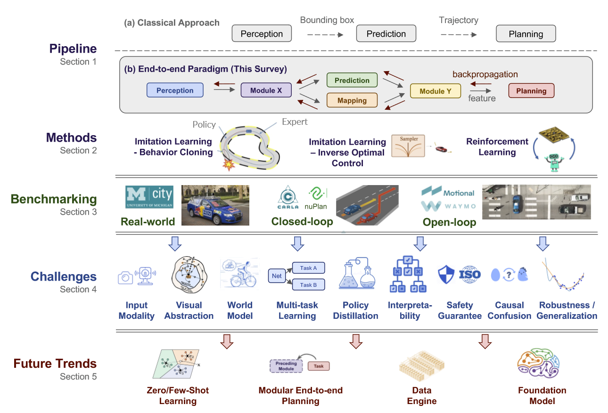
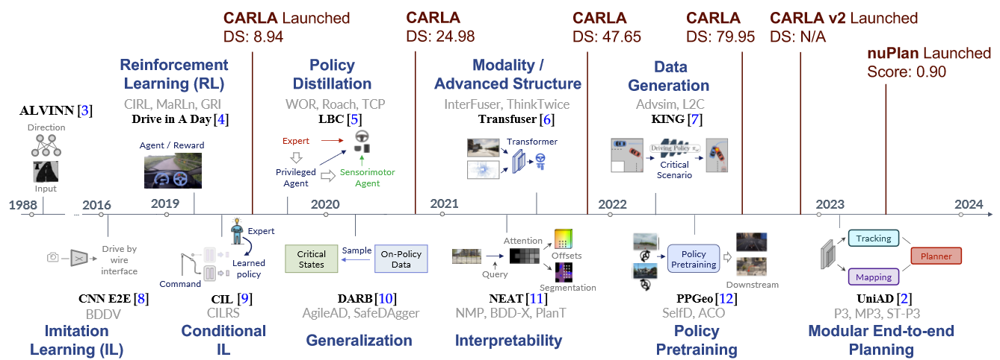
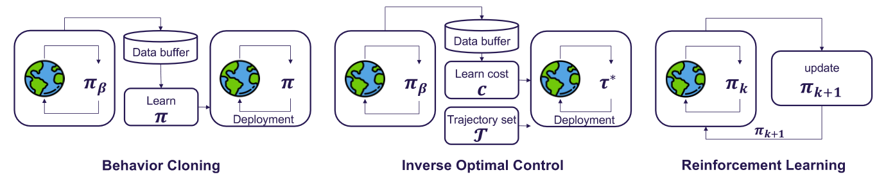
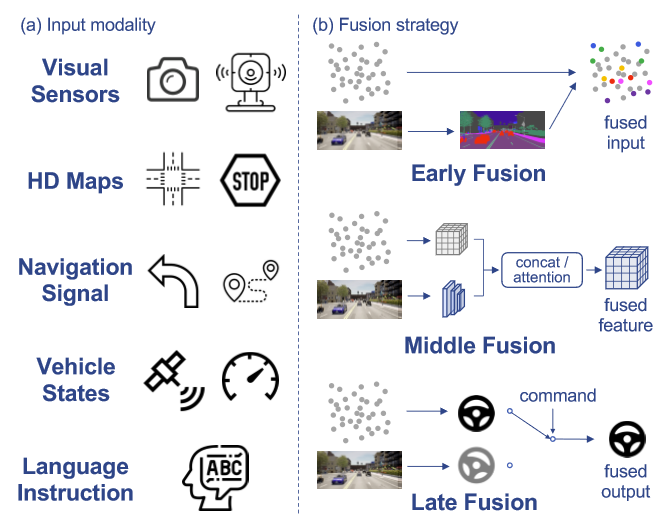
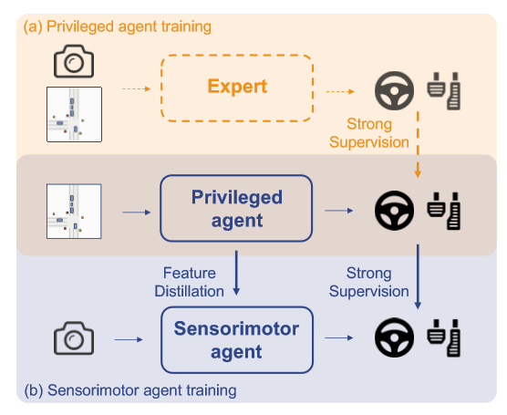
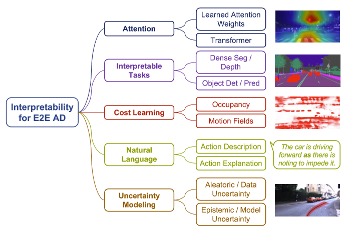
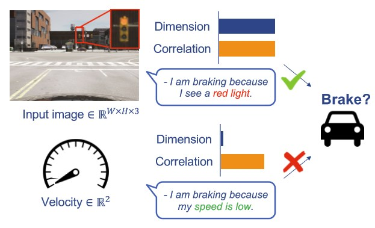
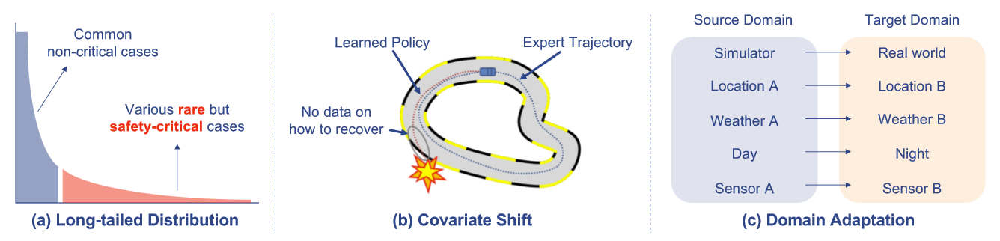

目次
End-to-end Autonomous Driving: Challenges and Frontiers
Li Chen、Penghao Wu、Kashyap Chitta、Bernhard Jaeger、Andreas Geiger、Hongyang Li
OpenDriveLab, Shanghai AI Lab／University of Hong Kong／University of Tübingen および Tübingen AI Center
arXiv:2306.16927v3 [cs.RO]、2024年8月15日
翻訳について：原文 PDF は
25_E2E_Survey_2306.16927.pdf（全 20 ページ）。本文、図の説明、図中ラベル、表、脚注、付録を訳出し、論文タイトルと参考文献は原文のまま掲載。図は原図を掲載し、英語ラベルの日本語訳を併記した。数式・数値・引用番号・コードの識別子は原文を維持。原文の記述に関する補足は「訳注」と明示し、本文と区別している。
要旨
自動運転コミュニティでは、検出や動き予測といった個々のタスクに注力するのではなく、生のセンサ入力を用いて車両の運動計画を生成するエンドツーエンドのアルゴリズム枠組みを採用する手法が急速に増えている。エンドツーエンドシステムは、モジュール型パイプラインと比べて、知覚と計画のための特徴を同時に最適化できるという利点を持つ。この分野は、大規模データセット、クローズドループ評価が利用可能になったこと、そして困難なシナリオで有効に機能する自動運転アルゴリズムへの需要が高まっていることにより、大きく発展してきた。本サーベイでは、270 本を超える論文を包括的に分析し、エンドツーエンド自動運転の動機、ロードマップ、方法論、課題、将来動向を網羅する。とりわけ、マルチモダリティ、解釈性、因果的混同、ロバスト性、世界モデルといったいくつかの重要な課題を掘り下げる。さらに、基盤モデルと視覚的事前学習における現在の進展と、これらの技術をエンドツーエンド運転の枠組みにいかに組み込むかについても議論する。最新の文献とオープンソースプロジェクトを収録したリポジトリを https://github.com/OpenDriveLab/End-to-end-Autonomous-Driving で継続的に更新している。
索引語：自動運転、エンドツーエンドシステム設計、方策学習、シミュレーション。
1 はじめに
従来の自動運転システムはモジュール型の設計方針を採用しており、知覚、予測、計画といった各機能を個別に開発して車載システムに統合している。操舵と加速の出力を生成する計画モジュールまたは制御モジュールは、運転体験を決定するうえで極めて重要な役割を担う。モジュール型パイプラインにおける計画の最も一般的な手法は、精緻なルールベース設計を用いるものであるが、これは道路上で生じる膨大な数の状況に対処するにはしばしば有効でない。そのため、大規模データを活用し、学習ベースの計画を有力な代替手段として用いる傾向が強まっている。
我々は、エンドツーエンド自動運転システムを、生のセンサデータを入力とし、計画および／または低レベルの制御動作を出力する、完全に微分可能なプログラムとして定義する。図1(a)-(b) に古典的な定式化とエンドツーエンドの定式化の違いを示す。従来の手法では、バウンディングボックスや車両軌道といった各構成要素の出力を後続のユニットに直接渡す（破線の矢印）。これに対して、エンドツーエンドの枠組みでは、特徴表現が構成要素間を伝播する（灰色の実線矢印）。最適化の対象となる関数は、たとえば計画性能に設定され、損失は誤差逆伝播によって最小化される（赤い矢印）。この過程でタスクは同時かつ大域的に最適化される。
本サーベイでは、この新たなトピックについて広範なレビューを行う。図1に本研究の概要を示す。まず、エンドツーエンド自動運転システムの動機とロードマップを論じる。エンドツーエンド手法は大きく模倣学習と強化学習に分類でき、これらの方法論を簡潔にレビューする。クローズドループ評価とオープンループ評価の両方について、データセットとベンチマークを取り上げる。解釈性、汎化、世界モデル、因果的混同などを含む一連の重要な課題を整理する。最後に、データエンジンや大規模基盤モデルなどの最新の発展を取り入れるためにコミュニティが取り組むべきと我々が考える将来動向を論じて締めくくる。なお、本レビューは主として理論的な観点から構成されている。バージョン管理、単体テスト、データサーバ、データクレンジング、ソフトウェアとハードウェアの協調設計などの工学的な取り組みは、エンドツーエンド技術を実装・展開するうえで極めて重要な役割を果たす。これらのトピックに関する最新の実践について公開されている情報は限られている。今後の議論において、コミュニティがより開かれた姿勢をとることを呼びかけたい。
脚注：L. Chen と H. Li は中国・上海の OpenDriveLab, Shanghai AI Lab、および中国・香港の University of Hong Kong に所属する。P. Wu は中国・上海の OpenDriveLab, Shanghai AI Lab に所属する。K. Chitta、B. Jaeger、A. Geiger はドイツの University of Tübingen および Tübingen AI Center に所属する。主たる連絡先：
lihongyang@pjlab.org.cn
1.1 エンドツーエンドシステムの動機
古典的なパイプラインでは、各モデルが独立した構成要素として働き、特定のタスク（例えば信号機検出）に対応する。このような設計は、解釈性とデバッグの容易さの点で有利である。しかし、検出は平均適合率の平均（mAP）を追求し、計画は運転の安全性と快適性を目指すというように、モジュールごとに最適化の目的が異なるため、システム全体が統一された目標、すなわち最終的な計画／制御タスクに整合しない可能性がある。逐次的な処理が進むにつれて各モジュールの誤差が累積し、情報損失を招くおそれがある。さらに、単一のエンドツーエンドのニューラルネットワークと比べ、複数のエンコーダとメッセージ伝送システムを含むマルチタスク・マルチモデルの展開は、計算負荷を増大させ、計算資源の最適でない利用につながる可能性がある。
古典的なシステムと対照的に、エンドツーエンド自動運転システムにはいくつかの利点がある。(a) 最も明白な利点は、知覚、予測、計画を、同時に学習できる単一のモデルに統合する簡潔さである。(b) 中間表現を含むシステム全体が、最終的なタスクに向けて最適化される。(c) 共有バックボーンにより計算効率が向上する。(d) データ駆動の最適化により、学習資源を単純に拡大するだけでシステムを改善できる可能性がある。

図1：サーベイの全体像。(a) パイプラインと手法。我々はエンドツーエンド自動運転を、生のセンサ入力と計画／制御出力を持つ学習ベースのアルゴリズム枠組みとして定義する。270 本以上の論文を詳しく調べ、模倣学習（IL）と強化学習（RL）に分類する。(b) ベンチマーク。代表的なベンチマークを、それぞれクローズドループ評価とオープンループ評価に分類する。クローズドループシミュレーションのさまざまな側面と、この問題に対するオープンループ評価の限界を取り上げる。(c) 課題。これが本研究の主要部である。幅広いトピックにわたる主要な課題を列挙し、これらの懸念がなぜ重要であるかを詳しく分析する。これらの課題に対する有望な解決策も取り上げる。(d) 将来動向。基盤モデル、視覚的事前学習などの急速な発展の助けを借りて、エンドツーエンドの枠組みがどのような恩恵を受けうるかを論じる。一部の写真はオンライン上の資料の提供による。
図中ラベル：Pipeline＝パイプライン、Section＝節、(a) Classical Approach＝(a) 古典的手法、Perception＝知覚、Bounding box＝バウンディングボックス、Prediction＝予測、Trajectory＝軌道、Planning＝計画、(b) End-to-end Paradigm (This Survey)＝(b) エンドツーエンドの枠組み（本サーベイ）、Module X / Module Y＝モジュール X／モジュール Y、Mapping＝地図構築、backpropagation＝誤差逆伝播、feature＝特徴、Methods＝手法、Policy＝方策、Expert＝エキスパート、Imitation Learning - Behavior Cloning＝模倣学習－行動クローニング、Imitation Learning – Inverse Optimal Control＝模倣学習－逆最適制御、Sampler＝サンプラ、Reinforcement Learning＝強化学習、Benchmarking＝ベンチマーク、Real-world＝実世界、Closed-loop＝クローズドループ、Open-loop＝オープンループ、Challenges＝課題、Input Modality＝入力モダリティ、Visual Abstraction＝視覚的抽象化、World Model＝世界モデル、Multi-task Learning＝マルチタスク学習、Net＝ネットワーク、Task A / Task B＝タスク A／タスク B、Policy Distillation＝方策蒸留、Interpretability＝解釈性、Safety Guarantee＝安全性の保証、Causal Confusion＝因果的混同、Robustness / Generalization＝ロバスト性／汎化、Future Trends＝将来動向、Zero/Few-Shot Learning＝ゼロショット／少数ショット学習、Modular End-to-end Planning＝モジュール型エンドツーエンド計画、Preceding Module＝先行モジュール、Task＝タスク、Data Engine＝データエンジン、Foundation Model＝基盤モデル
なお、エンドツーエンドの枠組みは、計画／制御出力のみを持つ単一のブラックボックスを必ずしも意味しない。古典的な手法と同様に、中間表現や中間出力を持つことができる（図1(b)）。実際、いくつかの最先端システム［1,2］はモジュール型の設計を提案しつつ、すべての構成要素をまとめて最適化することで優れた性能を達成している。
1.2 ロードマップ
図2に、エンドツーエンド自動運転における重要な成果の時系列ロードマップを示す。各部分は本質的な枠組みの転換または性能の向上を示している。エンドツーエンド自動運転の歴史は 1988 年の ALVINN［3］にさかのぼる。そこでは、カメラとレーザ距離計からの 2 つの「網膜」を入力とし、単純なニューラルネットワークが操舵出力を生成していた。NVIDIA はプロトタイプのエンドツーエンド CNN システムを設計し、GPU 計算の新時代においてこのアイデアを再確立した［8］。深層ニューラルネットワークの発展とともに、模倣学習［15,16］と強化学習［4,17,18,19］の両方で顕著な進展が達成された。LBC［5］で提案された方策蒸留の枠組みと関連手法［20,21,22,23］は、振る舞いの良いエキスパートを模倣することで、クローズドループ性能を大幅に向上させた。エキスパートと学習された方策との不一致に起因する汎化能力の問題を改善するため、いくつかの論文［10,24,25］は学習中にオンポリシーのデータ［26］を集約することを提案している。
大きな転換点は 2021 年頃に訪れた。妥当な計算予算の範囲で多様なセンサ構成が利用可能になったことで、大域的な文脈と代表的な特徴を捉えるために、より多くのモダリティと高度なアーキテクチャ（例えば Transformer［27］）を取り入れることに関心が集まった。TransFuser［6,28］とその多くの派生手法［29,30,31］がその例である。シミュレーション環境に関するより深い知見と組み合わさることで、これらの高度な設計は CARLA ベンチマーク［13］で大幅な性能向上をもたらした。自動運転システムの解釈性と安全性を高めるため、［11,32,33］の手法は、学習過程をよりよく監督するためにさまざまな補助モジュールを明示的に導入したり、注意の可視化を利用したりしている。最近の研究は、安全上重要なデータの生成［7,34,35］、方策学習のために用意された基盤モデルやバックボーンの事前学習［12,36,37］、そしてモジュール型エンドツーエンド計画の考え方の提唱［1,2,38,39］を優先している。一方で、この領域の研究を促進するために、新しく難易度の高い CARLA v2［13］および nuPlan［14］ベンチマークが導入されている。

図2：エンドツーエンド自動運転のロードマップ。主要なマイルストーンを時系列に示し、類似の研究を同じテーマの下にまとめている。代表的な研究または最初の研究を図とともに太字で示し、同じテーマの他の文献の時期はこれと異なる場合がある。また、各年の CARLA リーダーボード［13］の首位エントリのスコア（DS、0〜100 の範囲）と、最近の nuPlan チャレンジ［14］のスコア（0〜1 の範囲）も示す。
図中ラベル：CARLA Launched＝CARLA 公開、CARLA v2 Launched＝CARLA v2 公開、nuPlan Launched＝nuPlan 公開、Score＝スコア、Reinforcement Learning (RL)＝強化学習（RL）、Policy Distillation＝方策蒸留、Modality / Advanced Structure＝モダリティ／高度な構造、Data Generation＝データ生成、Direction＝方向、Input＝入力、Agent / Reward＝エージェント／報酬、Expert＝エキスパート、Privileged Agent＝特権エージェント、Sensorimotor Agent＝感覚運動エージェント、Driving Policy＝運転方策、Critical Scenario＝危険シナリオ、Drive by wire interface＝ドライブバイワイヤ・インタフェース、Command＝コマンド、Learned policy＝学習された方策、Critical States＝危険な状態、Sample＝サンプリング、On-Policy Data＝オンポリシーデータ、Attention＝注意、Query＝クエリ、Offsets＝オフセット、Segmentation＝セグメンテーション、Policy Pretraining＝方策の事前学習、Downstream＝下流タスク、Tracking＝追跡、Mapping＝地図構築、Planner＝プランナ、Imitation Learning (IL)＝模倣学習（IL）、Conditional IL＝条件付き IL、Generalization＝汎化、Interpretability＝解釈性、Modular End-to-end Planning＝モジュール型エンドツーエンド計画
1.3 関連サーベイとの比較
本サーベイと既存の関連サーベイ［40,41,42,43,44,45,46,47,48］との違いを明確にしておきたい。いくつかの先行サーベイ［40,41,42,43］は、エンドツーエンドシステムという意味で本サーベイと類似した内容を扱っている。しかし、それらはこの分野の最近の大きな転換とともに登場した新しいベンチマークや手法を扱っておらず、最前線の動向と課題にはあまり重点を置いていない。その他のサーベイは、模倣学習［44,45,46］や強化学習［47,48］など、この領域の特定のトピックに焦点を当てている。これに対して、本サーベイはこの分野の最新の発展に関する最新の情報を提供し、幅広いトピックを網羅するとともに、重要な課題について踏み込んだ議論を行う。
1.4 貢献
まとめると、本サーベイには 3 つの主要な貢献がある。
(a) 高次の動機、方法論、ベンチマークなどを含め、エンドツーエンド自動運転について初めて包括的な分析を提供する。単一のブロックを最適化するのではなく、安全で快適な運転を実現するという最終目標のもとで、アルゴリズムの枠組みを全体として設計するという考え方を提唱する。
(b) 現在の手法が直面している重要な課題を広範に調査する。調査した 270 本を超える論文から主要な側面をまとめ、汎化性、言語誘導型学習、因果的混同などのトピックを含めて詳細な分析を行う。
(c) 大規模基盤モデルとデータエンジンをいかに取り入れるかという、より広い影響について取り上げる。この研究の方向性と、それがもたらす大規模で高品質なデータは、この分野を大きく前進させうると我々は考えている。今後の研究を促進するため、新しい文献とオープンソースプロジェクトで更新されるリポジトリを継続的に維持している。
2 手法
本節では、既存のエンドツーエンド自動運転手法の大部分の背後にある基本原理をレビューする。2.1 節では模倣学習を用いる手法を論じ、その中で最も一般的な 2 つの下位カテゴリ、すなわち行動クローニングと逆最適制御について詳しく述べる。2.2 節では強化学習の枠組みに従う手法をまとめる。
2.1 模倣学習
模倣学習（IL）は、デモンストレーションからの学習とも呼ばれ、エキスパートの振る舞いを模倣することでエージェントに方策を学習させる。IL には、エキスパートの方策 \(\pi_\beta\) のもとで収集された軌道を含むデータセット \(D = \{\xi_i\}\) が必要であり、各軌道は状態と行動の組の系列である。IL の目標は、\(\pi_\beta\) に一致するエージェントの方策 \(\pi\) を学習することである。
方策 \(\pi\) は、計画された軌道または制御信号を出力できる。初期の研究では、収集が容易であることから、通常は制御出力を採用している。しかし、異なるステップで制御を予測すると不連続な操作につながる可能性があり、またネットワークは本質的にその車両のダイナミクスに特化してしまうため、他の車両への汎化が妨げられる。もう一つの系統の研究はウェイポイントを予測する。これは比較的長い時間範囲を考慮する。一方で、車両が追従すべき軌道を制御信号に変換するには追加の制御器が必要であり、これは自明ではなく、車両モデルと制御アルゴリズムを伴う。この 2 つの枠組みの間に明確な性能差は観察されていないため、本サーベイでは両者を明示的に区別しない。興味深く、より踏み込んだ議論は［22］に見られる。
IL の広く用いられているカテゴリの一つは行動クローニング（BC）［49］であり、問題を教師あり学習に帰着させる。逆最適制御（IOC）は逆強化学習（IRL）［50］とも呼ばれ、エキスパートのデモンストレーションを利用して報酬関数を学習する、もう一つのタイプの IL 手法である。以下でこれら 2 つのカテゴリについて詳しく述べる。
2.1.1 行動クローニング
BC では、収集したデータセット上での教師あり学習として計画損失を最小化することにより、エージェントの方策をエキスパートの方策に一致させる：\(\mathbb{E}_{(s,a)}\, \ell(\pi_\theta(s), a)\)。ここで、\(\ell(\pi_\theta(s), a)\) はエージェントの行動とエキスパートの行動との距離を測る損失関数を表す。

図3：エンドツーエンド自動運転における手法の概要。2 つの模倣学習の枠組み（行動クローニングと逆最適制御）とオンライン強化学習を含む、3 つの代表的な枠組みを図示する。
図中ラベル：Data buffer＝データバッファ、Learn π＝π を学習、Deployment＝実装・運用、Learn cost c＝コスト c を学習、Trajectory set＝軌道集合、update＝更新、Behavior Cloning＝行動クローニング、Inverse Optimal Control＝逆最適制御、Reinforcement Learning＝強化学習
運転への BC の初期の応用［3,8,51］では、エンドツーエンドのニューラルネットワークを用いてカメラ入力から制御信号を生成していた。BC ベースのエンドツーエンド運転モデルが困難な市街地シナリオに対処できるよう、マルチセンサ入力［6,52］、補助タスク［16,28］、改良されたエキスパート設計［21］などのさらなる改良が提案されてきた。
BC は、RL にとって極めて重要な人手による報酬設計を必要としないため、簡潔さと効率の点で有利である。しかし、いくつかの共通の問題がある。学習中、BC は各状態を独立同分布として扱うため、共変量シフトとして知られる重要な問題が生じる。一般的な IL について、この問題に対処するためにいくつかのオンポリシー手法が提案されている［26,53,54,55］。エンドツーエンド自動運転の文脈では、DAgger［26］が［5,10,25,56］で採用されている。BC のもう一つの一般的な問題は因果的混同であり、模倣者が特定の入力成分と出力信号との間の誤った相関を利用し、それに依存してしまうことである。この問題はエンドツーエンド自動運転の文脈で［57,58,59,60］において議論されている。これら 2 つの困難な問題については、それぞれ 4.9 節と 4.8 節でさらに論じる。
2.1.2 逆最適制御
従来の IOC アルゴリズムは、エキスパートのデモンストレーションから未知の報酬関数 \(R(s,a)\) を学習する。ここで、エキスパートの報酬関数は特徴の線形結合として表現できるとされる［50,61,62,63,64］。しかし、連続的で高次元な自動運転のシナリオでは、報酬の定義は暗黙的であり、最適化が難しい。
敵対的生成模倣学習［65,66,67］は IOC における特殊な手法であり、敵対的生成ネットワーク［68］の概念と同様に、エキスパートの方策と学習された方策を識別する敵対的な目的として報酬関数を設計する。最近では、いくつかの研究が補助的な知覚タスクとともにコストボリュームまたはコスト関数を最適化することを提案している。コストは報酬の別の表現であるため、我々はこれらの手法を IOC の領域に属するものとして分類する。コスト学習の枠組みを次のように定義する：エンドツーエンドの手法は妥当なコスト \(c(\cdot)\) を学習し、アルゴリズム的な軌道サンプラを用いて、図3に示すようにコストが最小となる軌道 \(\tau^*\) を選択する。
コスト設計に関しては、鳥瞰図（BEV）における学習されたコストボリューム［32］、他のエージェントの将来の動きから計算される同時エネルギー［69］、または確率的な意味的占有もしくは走行可能領域のレイヤの集合［39,70,71］といった表現がある。一方、軌道は通常、固定されたエキスパート軌道集合からサンプリングされるか［1,72］、運動学モデルを用いたパラメータサンプリングによって処理される［32,38,39,70］。その後、古典的な IOC 手法と同様に最大マージン損失を採用し、エキスパートのデモンストレーションのコストを最小にし、それ以外のコストを高くするよう促す。
コスト学習の手法にはいくつかの課題がある。特に、より現実的なコストを生成するために、通常は HD マップ、補助的な知覚タスク、複数のセンサが組み込まれ、そのことがマルチモーダル・マルチタスクの枠組みにおける学習とデータセット構築の難しさを増大させる。それにもかかわらず、前述のコスト学習手法は判断の安全性と解釈性を大きく向上させる（4.6 節を参照）。我々は、産業界に着想を得たエンドツーエンドシステム設計が実世界への応用において有力な手法であると考えている。
2.2 強化学習
強化学習（RL）［73,74］は試行錯誤によって学習する分野である。Atari ベンチマーク［76］で人間レベルの制御を達成した深層 Q ネットワーク（DQN）［75］の成功により、深層 RL が広く普及した。DQN は、クリティック（または Q ネットワーク）と呼ばれるニューラルネットワークを学習する。このネットワークは現在の状態と行動を入力とし、その行動の割引収益を予測する。方策は、予測収益が最も高い行動を選択することによって暗黙的に定義される。
RL では、新しいデータを収集するために（例えばランダムな行動によって）潜在的に危険な行動を実行できる環境が必要である。さらに、RL は IL よりもはるかに多くの学習データを必要とする。このため、現代の RL 手法はしばしば複数の環境にまたがってデータ収集を並列化する［77］。実世界でこれらの要件を満たすことは大きな困難を伴う。そのため、運転に RL を用いるほぼすべての論文は、この技術をシミュレーション内でのみ調べている。その多くは DQN のさまざまな拡張を用いている。コミュニティはまだ特定の RL アルゴリズムに収束していない。
RL は、何もない道路で実車による車線追従を学習することに成功している［4］。この心強い結果にもかかわらず、同様のタスクは 30 年前に IL によってすでに達成されていたことに留意すべきである［3］。現在までのところ、RL によるエンドツーエンド学習で IL に匹敵する結果を示した報告はない。この失敗の理由は、RL によって得られる勾配が、運転に必要な深い知覚アーキテクチャ（すなわち ResNet）を学習するには不十分であることにあると考えられる。RL が成功している Atari のようなベンチマークで用いられるモデルは比較的浅く、わずか数層で構成されている［78］。
RL は、教師あり学習（SL）と組み合わせることで、エンドツーエンド運転にうまく適用されてきた。Implicit affordances［18,19］は、セマンティックセグメンテーションなどのタスクを用いて SL により CNN エンコーダを事前学習する。第 2 段階では、このエンコーダを固定し、固定したエンコーダの特徴の上で、Q 学習［79］の現代的な版を用いて浅い方策ヘッドを学習する。RL は、IL を用いて事前学習されたネットワーク全体をファインチューニングするためにも使用できる［17,80］。
RL は、ネットワークがシミュレータの特権情報にアクセスできる場合にも効果的に適用されている［48,81,82］。特権 RL エージェントはデータセットのキュレーションに利用できる。Roach［21］は特権的な BEV 意味地図上で RL エージェントを学習し、その方策を用いて、下流の IL エージェントの学習に使うデータセットを自動的に収集する。WoR［20］は Q 関数と表形式の動的計画法を用いて、静的なデータセットに対する追加の、あるいは改善されたラベルを生成する。
この分野の課題の一つは、シミュレーションで得られた知見を実世界に移転することである。RL では目的は報酬関数として表現され、多くのアルゴリズムは報酬が密であり、環境の各ステップでフィードバックを与えることを要求する。現在の研究では通常、進捗や衝突回避といった単純な目的が用いられる。こうした単純な設計は、危険な振る舞いを助長する可能性がある［81］。より良い報酬関数を考案または学習することは未解決の問題である。もう一つの方向性は、疎な報酬を扱える RL アルゴリズムを開発し、関連する評価指標を直接最適化できるようにすることである。RL は世界モデル［83,84,85］と効果的に組み合わせることができるが、これには特有の課題がある（4.3 節を参照）。運転のための現在の RL の解決策は、シーンの低次元表現に大きく依存しており、この問題については 4.2.2 節でさらに論じる。
3 ベンチマーク
自動運転システムの安全性を確保するには、包括的な評価が必要である。そのために研究者は、適切なデータセット、シミュレータ、評価指標、ハードウェアを用いてこれらのシステムのベンチマークを行わなければならない。本節では、エンドツーエンド自動運転システムのベンチマークのための 3 つの手法、すなわち (1) 実世界評価、(2) シミュレーションにおけるオンラインまたはクローズドループ評価、(3) 運転データセット上でのオフラインまたはオープンループ評価を説明する。我々は拡張性があり原理的なオンラインシミュレーションの設定に焦点を当て、網羅性のために実世界評価とオフライン評価についても要約する。
3.1 実世界評価
自動運転のベンチマークに関する初期の取り組みは、実世界評価であった。特に、DARPA は一連のレースを開始した。最初のイベントでは、モハーベ砂漠を通る 240km のルートを自律的に走破することに 100 万ドルの賞金が提示されたが、達成したチームはなかった［86］。シリーズ最後のイベントである DARPA Urban Challenge では、交通法規を遵守し障害物を回避しながら、96km の模擬市街地コースを走行することが車両に求められた［87］。これらのレースは、LiDAR センサなど、自動運転における重要な発展を促した。この精神を受け継ぎ、University of Michigan は自動運転車の試験を促進するための大規模な管理された実世界環境である MCity［88］を設立した。しかし、このような学術的な取り組みは、データと車両の不足のため、エンドツーエンドシステムには広く用いられてこなかった。これに対して、無人運転車の車両群を展開する資源を持つ産業界は、アルゴリズムの改善をベンチマークするために実世界評価に頼ることができた。
3.2 オンライン／クローズドループシミュレーション
自動運転システムの試験を実世界で行うことは高コストかつ危険である。この課題に対処するため、シミュレーションが有力な代替手段となる［14,89,90,91,92,93］。シミュレータは迅速なプロトタイピングと試験を容易にし、アイデアの素早い反復を可能にし、単体テストのための多様なシナリオへの低コストなアクセスを提供する。加えて、シミュレータは性能を正確に測定するためのツールを提供する。しかし、その主な欠点は、シミュレーション環境で得られた結果が必ずしも実世界に汎化しないことである（4.9.3 節）。
クローズドループ評価では、実世界の運転環境を忠実に模倣したシミュレーション環境を構築する。評価では、運転システムをシミュレーション内に配置し、その性能を測定する。システムは指定された目標地点に向かって進みながら、交通の中を安全に走行しなければならない。このようなシミュレータの開発には、パラメータの初期化、交通シミュレーション、センサシミュレーション、車両ダイナミクスシミュレーションという 4 つの主要な下位タスクがある。以下でこれらの下位タスクを簡潔に説明し、続いてクローズドループベンチマークのために現在利用可能なオープンソースシミュレータをまとめる。
3.2.1 パラメータの初期化
シミュレーションには、天候、地図、3D アセット、さらに交通シーンにおける物体の配置などの低レベルの属性を含め、環境を高い自由度で制御できるという利点がある。強力である一方、これらのパラメータの数は膨大であり、設計上の難しい問題となる。現在のシミュレータはこれに 2 つの方法で取り組んでいる。
手続き的生成：従来、初期パラメータは 3D アーティストやエンジニアによって手作業で調整されてきた［89,90,91,92］。これは拡張性を制限する。最近では、シミュレーションの特性の一部をコンピュータアルゴリズムによって確率分布からサンプリングできるようになっており、我々はこれを手続き的生成と呼ぶ［94］。手続き的生成アルゴリズムは、ルール、ヒューリスティクス、ランダム化を組み合わせて、多様な道路網、交通パターン、照明条件、物体配置を作り出す［95,96］。完全な手作業による設計に比べて効率が良いことから、ビデオゲームやシミュレーションにおいて最も一般的に用いられる初期化手法の一つとなっている。それでもなお、この過程では生成の信頼性を制御するために事前に定義されたパラメータとアルゴリズムが必要であり、時間がかかり、多くの専門知識を要する。
データ駆動：シミュレーション初期化のためのデータ駆動手法は、必要なパラメータを学習することを目指す。おそらく最も単純な方法は、実世界の運転ログからサンプリングすることであり［14,93］、道路地図や交通パターンなどのパラメータを、事前に記録されたデータセットから直接抽出する。ログサンプリングの利点は、実世界のデータに存在する自然なばらつきを捉えることができ、より現実的なシミュレーションシナリオにつながることである。しかし、自動運転システムのロバスト性を試験するうえで重要な、まれな状況を含まない可能性がある。そのようなシナリオの出現頻度を高めるように初期パラメータを最適化することができる［7,34,35］。初期化のためのもう一つの高度なデータ駆動手法は生成モデリングであり、機械学習アルゴリズムを用いて実世界データの根底にある構造と分布を学習する。これにより、実世界に似ているが元のデータには含まれていなかった新しいシナリオを生成できる［97,98,99,100］。
3.2.2 交通シミュレーション
交通シミュレーションでは、環境内に仮想的な存在を生成・配置し、現実的な動きをさせる［98,101］。これらの存在には通常、車両（乗用車、オートバイ、自転車など）と歩行者が含まれる。交通シミュレータは、速度、加速、制動、障害物、他の存在の振る舞いの影響を考慮しなければならない。さらに、現実的な市街地走行をシミュレートするには、信号機の状態を定期的に更新しなければならない。交通シミュレーションには 2 つの代表的な手法があり、以下で説明する。
ルールベース：ルールベースの交通シミュレータは、事前に定義されたルールを用いて交通参加者の動きを生成する。この概念の最も代表的な実装は Intelligent Driver Model（IDM）［102］である。IDM は車両追従モデルであり、各車両の現在速度、先行車の速度、望ましい安全距離に基づいて各車両の加速度を計算する。広く用いられ単純ではあるが、この手法は市街地環境における現実的な動きや複雑な相互作用をシミュレートするには不十分な場合がある。
データ駆動：現実の人間の交通行動は、車線変更、合流、急停止などを含み、非常に相互作用的かつ複雑である。このような行動をモデル化するため、データ駆動の交通シミュレーションは実世界の運転から収集されたデータを利用する。これらのモデルはより微妙で現実的な振る舞いを捉えることができるが、学習には大量のラベル付きデータを必要とする。このタスクのために、多種多様な学習ベースの手法が提案されている［98,99,101,103,104,105］。
3.2.3 センサシミュレーション
センサシミュレーションは、エンドツーエンド自動運転システムを評価するうえで極めて重要である。これは、シミュレータ内のさまざまな視点から運転システムが受け取るであろう、カメラ画像や LiDAR スキャンなどの模擬的な生のセンサデータを生成することを含む［106,107,108］。自動運転システムを現実的に評価するには、この過程でノイズと遮蔽を考慮する必要がある。センサシミュレーションに関する考え方には、以下に述べる 2 つの主要な系統がある。
グラフィックスベース：最近のコンピュータグラフィックスシミュレータは、環境の 3D モデルと交通参加者のモデルを用い、センサにおける物理的なレンダリング過程の近似によってセンサデータを生成する［90,91］。例えば、カメラ画像をシミュレートする際に、実世界の環境に存在する遮蔽、影、反射を扱うことが含まれる。しかし、グラフィックスベースのシミュレーションの現実性はしばしば不十分であるか、重い計算を代償とし、並列化が容易でない［109］。これは 3D モデルの品質と、センサのモデル化に用いられる近似に密接に結びついている。運転データのためのグラフィックスベースのレンダリングに関する包括的なサーベイが［110］にある。
データ駆動：データ駆動のセンサシミュレーションは、実世界のセンサデータを活用し、自車と周囲の交通の両方が記録時とは異なる動きをしうるシミュレーションを作り出す［111,112,113］。代表的な手法は Neural Radiance Fields（NeRF）［114］と 3D Gaussian Splatting［115］であり、シーンの形状と見た目の暗黙的な表現を学習することで、シーンの新しい視点を生成できる。これらの手法はグラフィックスベースの手法よりも見た目に現実的なセンサデータを生成できるが、レンダリング時間が長い、再構成する各シーンごとに個別の学習が必要である、といった制約がある［108,116,117,118,119］。データ駆動センサシミュレーションのもう一つの手法はドメイン適応であり、実際のセンサデータとグラフィックスベースで模擬したセンサデータとのギャップを最小化することを目指す［120］。GAN などの深層学習手法を用いて現実性を高めることができる（4.9.3 節）。
| シミュレータ | ベンチマーク |
|---|---|
| CARLA | CoRL［91］、noCrash［124］、Town05［6］、LAV［52］、Roach［21］、Longest6［28］、Leaderboard v1 and v2［13］ |
| nuPlan | NAVSIM［125］、Val14［126］、Leaderboard［14］ |
表1：自動運転のクローズドループ評価のための稼働中のベンチマークを持つオープンソースシミュレータ。
3.2.4 車両ダイナミクスシミュレーション
運転シミュレーションの最後の側面は、模擬車両が物理的に妥当な動きに従うことを保証することに関わる。既存の公開シミュレータの大半は、ユニサイクルモデル［121］や自転車モデル［122］といった大幅に簡略化された車両モデルを用いている。しかし、アルゴリズムをシミュレーションから実世界へ円滑に移転するためには、車両ダイナミクスのより正確な物理モデルを組み込むことが不可欠である。例えば、CARLA はマルチボディシステムの手法を採用し、車両を 4 つの車輪の上のばね上質量の集合として表現している。包括的なレビューについては［123］を参照されたい。
3.2.5 ベンチマーク
現在までに利用可能なエンドツーエンド運転ベンチマークの簡潔な概要を表1に示す。2019 年、CARLA［91］とともに公開された最初のベンチマークは、ほぼ満点のスコアで解かれた［5］。その後の NoCrash ベンチマーク［124］では、特定の天候条件下の単一の CARLA の町で学習し、別の町と天候の組への汎化を試験する。単一の町の代わりに、Town05 ベンチマーク［6］では、Town05 を試験用に除いたうえで利用可能なすべての町で学習する。同様に、LAV ベンチマークは、試験用に確保された Town02 と Town05 を除くすべての町で学習する。Roach［21］は 3 つの試験用の町を持つ設定を用いるが、それらはすべて学習中に見られたものであり、Town05 や LAV にあるような安全上重要なシナリオは含まない。最後に、Longest6 ベンチマーク［28］は 6 つの試験用の町を用いる。2 つのオンラインサーバであるリーダーボード（v1 と v2）［13］は、評価ルートを非公開にすることで公平な比較を保証している。リーダーボード v2 は、ルート長が長い（v1 の 1-2km に対し平均 8km 超）ことと、多種多様な新しい交通シナリオがあることから、非常に難易度が高い。
nuPlan シミュレータは現在、NAVSIM プロジェクト［125］を通じてエンドツーエンドシステムの評価に利用できる。さらに、nuPlan のデータ駆動のパラメータ初期化（3.2.1 節）によって、エージェントが地図と物体の属性を入力とする 2 つのベンチマークがある。［126］で提案された Val14 は、nuPlan の検証用分割を用いる。非公開のテストセットを持つ提出サーバであるリーダーボードは 2023 年の nuPlan チャレンジで使用されたが、現在は提出を受け付けていない。
3.3 オフライン／オープンループ評価
オープンループ評価は主に、事前に記録されたエキスパートの運転行動に対するシステムの性能を評価する。この手法には、(1) センサの読み取り値、(2) 目標地点、(3) 対応する将来の運転軌道（通常は人間のドライバから得られる）を含む評価データセットが必要である。センサ入力と目標地点を入力として与え、システムが予測した将来軌道を運転ログ中の軌道と比較することで性能を測定する。システムは、軌道予測が人間の正解にどれだけ近いか、さらに他のエージェントとの衝突確率などの補助的な評価指標に基づいて評価される。オープンループ評価の利点は、シミュレータを必要としないため、現実的な交通データとセンサデータを用いて容易に実施できることである。しかし、主要な欠点は、実際の運用時に遭遇する試験分布における性能を測定しないことである。試験中、運転システムはエキスパートの走行経路から逸脱する可能性があり、そのような逸脱から回復するシステムの能力を検証することが不可欠である（4.9.2 節）。さらに、予測軌道と記録軌道の距離は、マルチモーダルなシナリオにおいては理想的な評価指標ではない。例えば、右左折専用車線への合流の場合、すぐに合流する選択肢と後で合流する選択肢の両方が妥当でありうるが、オープンループ評価ではデータ中で観測されなかった選択肢にペナルティが課される。そのため、衝突確率と予測誤差の測定に加えて、交通違反、進捗、運転の快適性など、より包括的な側面を扱ういくつかの評価指標が提案されている［126］。
この手法には、引き出すべき軌道を含む包括的なデータセットが必要である。この目的で最もよく用いられるデータセットには、nuScenes［127］、Argoverse［128］、Waymo［129］、nuPlan［14］がある。これらのデータセットはいずれも、さまざまな難易度の実世界の走行を多数含んでいる。しかし、前述の欠点のため、オープンループの結果はクローズドループにおける運転行動の改善の決定的な証拠とはならない［124,126,130,131］。全体として、今後の研究では、利用可能かつ適用可能であれば、現実的なクローズドループのベンチマークを行うことが推奨される。
4 課題
図1に示した各トピックに沿って、現在の課題、関連研究または潜在的な解決策、リスク、機会を順に見ていく。まず 4.1 節で異なる入力モダリティの扱いにおける課題から始め、続いて 4.2 節で効率的な方策学習のための視覚的抽象化について論じる。さらに、世界モデル学習（4.3 節）、マルチタスクの枠組み（4.4 節）、方策蒸留（4.5 節）といった学習の枠組みを紹介する。最後に、安全で信頼性の高いエンドツーエンド自動運転を妨げる一般的な問題として、4.6 節で解釈性、4.7 節で安全性の保証、4.8 節で因果的混同、4.9 節でロバスト性を論じる。
4.1 センシングと入力モダリティをめぐるジレンマ
4.1.1 センシングとマルチセンサフュージョン
センシング：初期の研究［8］は単眼カメラで車線追従を実現することに成功したが、この単一の入力モダリティでは複雑なシナリオに対処できない。そのため、最近の自動運転車には図4に示すさまざまなセンサが導入されている。特に、カメラからの RGB 画像は人間が世界を知覚する方法を再現し、豊富な意味的詳細を持つ。LiDAR やステレオカメラは正確な 3D 空間情報を提供する。ミリ波レーダやイベントカメラといった新しいセンサは、物体の相対的な動きを捉えることに優れている。さらに、速度計や IMU から得られる車両状態とナビゲーションコマンドも、運転システムを誘導する入力の系統である。しかし、さまざまなセンサは異なる視点、データ分布、大きな価格差を持っており、自動運転のためにセンサ配置を効果的に設計し、それらを相互に補完するよう融合することに課題をもたらしている。

図4：入力モダリティとフュージョン戦略の例。異なるモダリティはそれぞれ固有の特性を持ち、効果的なセンサフュージョンという課題につながる。点群と画像を例として、さまざまなフュージョン戦略を示す。
図中ラベル：(a) Input modality＝(a) 入力モダリティ、Visual Sensors＝視覚センサ、HD Maps＝HD マップ、Navigation Signal＝ナビゲーション信号、Vehicle States＝車両状態、Language Instruction＝言語指示、(b) Fusion strategy＝(b) フュージョン戦略、fused input＝融合された入力、Early Fusion＝早期フュージョン、concat / attention＝連結／注意、fused feature＝融合された特徴、Middle Fusion＝中間フュージョン、command＝コマンド、fused output＝融合された出力、Late Fusion＝後期フュージョン
マルチセンサフュージョンは、主に知覚関連の分野、例えば物体検出［132,133］やセマンティックセグメンテーション［134,135］で議論されてきており、通常、早期、中間、後期フュージョンの 3 つのグループに分類される。エンドツーエンド自動運転アルゴリズムも同様のフュージョン方式を探求している。早期フュージョンは、センサ入力を共有の特徴抽出器に入力する前に結合するものであり、連結が一般的な融合方法である［32,136,137,138,139］。視点の不一致を解消するため、点群を画像に投影したり［140］、逆に投影したり（LiDAR 点の意味ラベルを予測する［52,141］）する研究もある。一方、後期フュージョンは複数のモダリティからの複数の結果を結合する。これは性能が劣るためあまり議論されていない［6,142］。これらの手法とは対照的に、中間フュージョンは、入力を個別にエンコードしてから特徴レベルで融合することで、ネットワーク内でマルチセンサフュージョンを実現する。単純な連結もよく採用されている［15,22,30,143,144,145,146,147］。最近では、特徴間の相互作用をモデル化するために Transformer［27］を用いた研究がある［6,28,29,148,149］。Transformer の注意機構は、異なるセンサ入力の文脈を集約し、より安全なエンドツーエンド運転を実現するうえで大きな有効性を示している。
知覚における進展に触発され、BEV［132,133］のような統一された空間でモダリティをモデル化することは有益である。エンドツーエンド運転では、方策に関連する文脈を特定し、無関係な詳細を捨てることも必要である。知覚ベースの表現については 4.2.1 節で論じる。加えて、すべてのトークンを自由に相互接続する自己注意層は大きな計算コストを招き、有用な情報の抽出を保証できない。［150,151］のような知覚分野における高度な Transformer ベースのフュージョン機構は、エンドツーエンド運転タスクへの応用が期待される。
4.1.2 入力としての言語
人間は、視覚的知覚と内在的な知識の両方を用いて運転しており、これらが一体となって因果的な行動を形作っている。身体性 AI のような自動運転に関連する領域では、視覚運動エージェントを制御するためのきめ細かな知識および指示として自然言語を取り入れることで、顕著な進展が達成されている［152,153,154,155］。しかし、ロボットの応用と比べると、運転タスクはタスク分解を必要としない点でより単純であり、一方で屋外環境は非常に動的なエージェントを含みながらグラウンディングのための特徴的な手がかりが少なく、はるかに複雑である。
言語的知識を運転に取り入れるため、屋外でのグラウンディングと視覚言語ナビゲーションのタスクをベンチマークするいくつかのデータセットが提案されている［156,157,158,159］。HAD［160］は人間から車両への助言を受け取り、視覚的グラウンディングのタスクを追加する。Sriram et al.［161］は自然言語の指示を高レベルの行動に変換し、一方［162,163］はテキストを直接グラウンディングする。CLIP-MC［164］と LM-Nav［165］は CLIP［166］を利用して、指示からの言語的知識と画像からの視覚的特徴の両方を抽出する。
最近では、大規模言語モデル（LLM）［167,168］の急速な発展を受けて、知覚したシーンをトークンにエンコードし、それを LLM へのプロンプトとして与えて制御予測とテキストによる説明を得る研究がある［169,170,171］。研究者はまた、運転タスクを質問応答問題として定式化し、対応するベンチマークを構築している［172,173］。これらの研究は、LLM が高度な指示を扱い、異なるデータドメインに汎化する機会を提供することを強調しており、これはロボット分野への応用と同様の利点を共有している［174］。しかし、推論時間の長さ、定量的な精度の低さ、出力の不安定さを考慮すると、公道での運転に LLM を用いることは現時点では困難でありうる。考えられる解決策としては、複雑なシナリオに限ってクラウド上で LLM を利用し、高レベルの行動予測のみに用いることが挙げられる。
4.2 視覚的抽象化への依存
エンドツーエンド自動運転システムは、大まかに 2 つの段階を持つ。すなわち、状態を潜在的な特徴表現にエンコードする段階と、中間特徴を用いて運転方策をデコードする段階である。市街地走行では、入力状態、すなわち周囲環境と自車の状態は、ビデオゲームのような一般的な方策学習ベンチマーク［18,175］と比べてはるかに多様かつ高次元であり、これが表現と方策決定に必要な注目領域との不整合につながる可能性がある。したがって、「良い」中間知覚表現を設計すること、あるいはまず代理タスクを用いて視覚エンコーダを事前学習することが有用である。これにより、ネットワークは運転に有用な情報を効果的に抽出でき、後続の方策段階が容易になる。さらに、これは RL 手法のサンプル効率を向上させうる。
4.2.1 表現の設計
素朴な表現はさまざまなバックボーンで抽出される。古典的な畳み込みニューラルネットワーク（CNN）は、平行移動等変性と高い効率という利点により、依然として主流である［176］。深度で事前学習された CNN［177］は、知覚および下流の性能を大きく向上させる。対照的に、Transformer ベースの特徴抽出器［178,179］は知覚タスクにおいて高い拡張性を示しているが、エンドツーエンド運転ではまだ広く採用されていない。運転に特化した表現として、研究者は鳥瞰図（BEV）の概念を導入し、異なるセンサモダリティと時間情報を統一された 3D 空間内で融合している［133,180,181］。BEV はまた、下流タスクへの容易な適応を可能にする［2,30,182,183］。加えて、不規則な形状の物体を捉えるためにグリッドベースの 3D 占有表現が開発され、計画における衝突回避に用いられている［184］。それでもなお、この密な表現は BEV の手法と比べて膨大な計算コストをもたらす。
もう一つの未解決の問題は地図の表現である。従来の自動運転は HD マップに依存している。HD マップの入手コストが高いことから、BEV セグメンテーション［185］、ベクトル化された車線境界線［186］、中心線とそのトポロジー［187,188］、車線セグメント［189］など、さまざまな定式化によるオンライン地図構築手法が考案されている。しかし、エンドツーエンドシステムに最も適した定式化はまだ検証されていない。
さまざまな表現設計は、後続の意思決定過程をどのように設計するかについての可能性を提供する一方で、枠組み全体のためには両方の部分を協調設計する必要があるという課題ももたらす。さらに、学習資源を拡大したいくつかの単純だが効果的な手法に見られる傾向を踏まえると［22,28］、地図のような明示的な表現が最終的に必要かどうかは不確かである。
4.2.2 表現学習
表現学習はしばしば、何らかの帰納バイアスや事前情報を取り入れる。学習された表現には必然的に情報のボトルネックが存在する可能性があり、判断に無関係な冗長な文脈は取り除かれうる。
初期のいくつかの手法は、既製のネットワークから得られるセマンティックセグメンテーションマスクを、後続の方策学習のための入力表現として直接利用している［190,191］。SESR［192］はさらに、VAE［193］を通じてセグメンテーションマスクをクラスごとに分離された表現にエンコードする。［194,195］では、信号機の状態、車線中心からのオフセット、先行車までの距離など、予測されたアフォーダンス指標が方策学習の表現として用いられる。
セグメンテーションのような結果を表現として用いると、人間が定義したボトルネックが生じ、有用な情報の損失につながりうることを踏まえ、一部の研究は事前学習タスクから得られる中間特徴を RL 学習のための効果的な表現として選択している［18,19,196,197］。［198］では、セグメンテーションと深度マップの拡散された境界から得られる注意マップによって VAE の潜在特徴を拡張し、重要な領域を強調する。TARP［199］は、一連の過去のタスクのデータを利用して、異なるタスクに関連する予測タスクを実行し、有用な表現を獲得する。［200］では、報酬の差とダイナミクスモデルの出力の差からなる \(\pi\)-bisimulation 距離を近似することで潜在表現を学習する。ACO［36］は、対照学習の構造に操舵角の分類を加えることで識別的な特徴を学習する。最近では、PPGeo［12］が、キャリブレーションされていない運転動画上で、深度推定とともに動き予測を自己教師ありで行うことにより効果的な表現を学習することを提案している。ViDAR［201］は生の画像と点群のペアを利用し、点群予測の事前タスクによって視覚エンコーダを事前学習する。これらの研究は、大規模なラベルなしデータからの方策学習のための自己教師あり表現学習が有望であり、今後探求する価値があることを示している。
4.3 モデルベース RL のための世界モデリングの複雑さ
知覚表現をよりうまく抽象化する能力に加えて、エンドツーエンドモデルが安全な操作を行うためには、将来について妥当な予測を行うことが不可欠である。本節では主に、世界モデルが方策モデルに明示的な将来予測を提供する、現在のモデルベース方策学習の研究の課題について論じる。
深層 RL は一般に高いサンプル複雑度に悩まされており、これは自動運転において顕著である。モデルベース強化学習（MBRL）は、エージェントが実際の環境の代わりに学習された世界モデルと相互作用できるようにすることで、サンプル効率を改善する有望な方向性を提供する。MBRL 手法は、遷移ダイナミクスと報酬関数から構成される明示的な世界（環境）モデルを用いる。CARLA のようなシミュレータは比較的遅いため、これは運転において特に有用である。
しかし、非常に動的な環境をモデル化することは困難なタスクである。問題を単純化するため、Chen et al.［20］は遷移ダイナミクスを、非反応的な世界モデルと単純な運動学的自転車モデルに分解する。［138］では、確率的な系列潜在モデルを世界モデルとして用いる。学習された世界モデルの潜在的な不正確さに対処するため、Henaff et al.［202］はドロップアウト正則化を用いて方策ネットワークを学習し、不確実性コストを推定する。別の手法［203］は、複数の世界モデルのアンサンブルを用いて不確実性推定を行い、それに基づいて想像上のロールアウトを打ち切ったり、適宜調整したりできるようにする。Dreamer［83］に着想を得た ISO-Dream［204］は、視覚的ダイナミクスを制御可能な状態と制御不可能な状態に分離し、分離された状態上で方策を学習する。
自動運転において、生の画像空間で世界モデルを学習することは容易ではない点に注意する価値がある。信号機のような重要な小さい詳細は、予測画像の中で容易に見落とされてしまう。これに取り組むため、いくつかの研究［205,206,207］は、主流となっている拡散技術［208］を用いている。MILE［209］は、模倣学習に加えて、BEV セグメンテーション空間における Dreamer 型の世界モデル学習を補助タスクとして取り入れている。SEM2［137］も Dreamer の構造を拡張しているが、BEV 地図を入力とし、学習には RL を用いる。学習された世界モデルを MBRL に直接用いるだけでなく、DeRL［197］はモデルフリーのアクター・クリティックの枠組みと世界モデルを組み合わせ、両方のモデルからの行動または状態の自己評価を融合する。
エンドツーエンド自動運転のための世界モデル学習は、RL のサンプル複雑度を大きく削減し、世界を理解することが運転に役立つことから、新たに台頭しつつある有望な方向性である。しかし、運転環境は非常に複雑かつ動的であるため、何をモデル化する必要があるのか、そして世界をどのように効果的にモデル化するのかを決定するには、さらなる研究が依然として必要である。
4.4 マルチタスク学習への依存
マルチタスク学習（MTL）は、共有表現に基づき、個別のヘッドを通じて複数の関連タスクを同時に実行するものである。MTL には、計算コストの削減、関連するドメイン知識の共有、タスク間の関係を活用してモデルの汎化能力を向上させる能力といった利点がある［210］。その結果、最終的な方策予測に環境の包括的な理解を必要とするエンドツーエンド運転には、MTL がよく適している。しかし、最良の性能を達成するための補助タスクの最適な組み合わせと損失の適切な重み付けは、大きな課題である。

図5：方策蒸留。(a) 特権エージェントは、特権的な正解情報にアクセスしてロバストな方策を学習する。エキスパートは破線で示されており、特権エージェントが RL で学習される場合には必須でないことを表す。(b) 感覚運動エージェントは、特徴蒸留と出力の模倣の両方を通じて特権エージェントを模倣する。
図中ラベル：(a) Privileged agent training＝(a) 特権エージェントの学習、Expert＝エキスパート、Strong Supervision＝強い教師信号、Privileged agent＝特権エージェント、Feature Distillation＝特徴蒸留、Sensorimotor agent＝感覚運動エージェント、(b) Sensorimotor agent training＝(b) 感覚運動エージェントの学習
密な予測同士が密接に相関する一般的な視覚タスクとは対照的に、エンドツーエンド運転は疎な信号を予測する。この疎な教師信号は、エンコーダにおいて意思決定に有用な情報を抽出することの難しさを増大させる。画像入力に対しては、セマンティックセグメンテーション［28,31,140,211,212,213］や深度推定［28,31,211,212,213］といった補助タスクがエンドツーエンド自動運転モデルで一般的に採用されている。セマンティックセグメンテーションはモデルがシーンを高レベルで理解するのを助け、深度推定はモデルが環境の 3D 形状を捉え、重要な物体までの距離をよりよく推定することを可能にする。透視画像上の補助タスクに加えて、3D 物体検出［28,31,52］も LiDAR エンコーダにとって有用である。BEV が自動運転のための自然で一般的な表現となるにつれ、BEV セグメンテーションのようなタスクが、BEV 空間で特徴を集約するモデル［11,23,28,29,30,31,52,149］に組み込まれている。さらに、これらの視覚タスクに加えて、［29,211,214］は信号機の状態や対向車線までの距離などの視覚的アフォーダンスも予測する。それでもなお、複数の種類の整合した高品質なアノテーションを持つ大規模データセットを構築することは実世界の応用において容易ではなく、現在のモデルが MTL に依存していることから、これは依然として大きな懸念事項である。
4.5 非効率なエキスパートと方策蒸留
模倣学習、またはその主要な下位カテゴリである行動クローニングは、エキスパートの振る舞いを模倣する単なる教師あり学習であるため、対応する手法は通常「教師－生徒」の枠組みに従う。そこには 2 つの主要な課題がある。(1) CARLA が提供する人手で作られたエキスパートのオートパイロットのような教師は、周囲のエージェントと地図の正解状態にアクセスできるにもかかわらず、完璧なドライバではない。(2) 生徒はセンサ入力のみを用いて記録された出力により教師あり学習されるため、知覚特徴の抽出と方策の学習をゼロから同時に行う必要がある。
いくつかの研究は、学習過程を 2 段階に分けること、すなわちより強い教師ネットワークを学習し、その後方策を生徒に蒸留することを提案している。特に、Chen et al.［5,52］はまず特権エージェントを用いて環境の状態にアクセスしながら行動の仕方を学習させ、次に感覚運動エージェント（生徒）に出力段階での蒸留によって特権エージェントを忠実に模倣させる。特権エージェントの入力として、よりコンパクトな BEV 表現を用いることで、元のエキスパートよりも強い汎化能力と教師信号が得られる。この過程を図5に示す。
計画結果のみを教師とするのではなく、特徴レベルで知識を蒸留する研究もいくつかある。例えば、FM-Net［215］はセグメンテーションモデルとオプティカルフローモデルを補助的な教師として用い、特徴の学習を誘導する。SAM［216］は教師ネットワークと生徒ネットワークの間に L2 特徴損失を加え、CaT［23］は BEV において特徴を整合させる。WoR［20］はモデルベースの行動価値関数を学習し、それを用いて視覚運動方策を教師あり学習する。Roach［21］は RL を用いてより強い特権エキスパートを学習し、BC の上限を取り除く。Roach は複数の蒸留目標、すなわち行動分布、価値／報酬、潜在特徴を取り入れている。強力な RL エキスパートを活用することで、TCP［22］は単一のカメラを視覚入力として CARLA リーダーボードで新たな最高性能を達成している。DriveAdpater［182］は、特徴整合の目的関数を用いて、知覚のみの生徒とアダプタを学習する。この分離された枠組みは、教師の知識と生徒の学習効率の両方を十分に享受する。
ロバストなエキスパートの設計とさまざまなレベルでの知識の移転に多大な努力が払われてきたものの、教師－生徒の枠組みは依然として非効率な蒸留に悩まされている。例えば、特権エージェントは信号機の正解状態にアクセスできるが、信号機は画像中の小さな物体であるため、対応する特徴を蒸留することが難しい。その結果、視覚運動エージェントは特権エージェントと比べて大きな性能差を示す。これはまた、生徒に因果的混同を引き起こす可能性もある（4.8 節を参照）。このギャップを最小化するために、機械学習における一般的な蒸留手法からいかにしてより多くの着想を得るかを探求する価値がある。
4.6 解釈性の欠如
解釈性は自動運転において極めて重要な役割を果たす［217］。それはエンジニアがシステムをよりよくデバッグすることを可能にし、社会的な観点から性能の保証を提供し、社会的受容を促進する。しばしば「ブラックボックス」と呼ばれるエンドツーエンド運転モデルにとって、解釈性の達成はより不可欠であり、かつより困難である。
学習済みのモデルに対しては、事後的な X-AI（説明可能な AI）の手法を適用して顕著性マップを得ることができる［211,218,219,220,221］。顕著性マップは、モデルが計画のために主に依存している視覚入力中の特定の領域を強調表示する。しかし、この手法が提供する情報は限られており、その有効性と妥当性を評価することは難しい。そこで我々は、モデル設計において直接解釈性を高めるエンドツーエンドの枠組みに焦点を当てる。以下で、図6に示す解釈性の各カテゴリを紹介する。

図6：さまざまな形態の解釈性のまとめ。これらは、エンドツーエンドモデルの意思決定過程と出力の信頼性を人間が理解する助けとなる。
図中ラベル：Interpretability for E2E AD＝エンドツーエンド自動運転のための解釈性、Attention＝注意、Learned Attention Weights＝学習された注意の重み、Interpretable Tasks＝解釈可能なタスク、Dense Seg / Depth＝密なセグメンテーション／深度、Object Det / Pred＝物体検出／予測、Cost Learning＝コスト学習、Occupancy＝占有、Motion Fields＝動きの場、Natural Language＝自然言語、Action Description＝行動の記述、Action Explanation＝行動の説明、The car is driving forward as there is noting to impede it.＝前方を妨げるものがないので車は前進している。、Uncertainty Modeling＝不確実性のモデル化、Aleatoric / Data Uncertainty＝偶然的／データの不確実性、Epistemic / Model Uncertainty＝認識的／モデルの不確実性
注意の可視化：注意機構はある程度の解釈性を提供する。［33,211,214,221,222］では、学習された注意の重みを適用して、中間特徴マップから重要な特徴を集約する。注意の重みはまた、異なる物体領域［223］または固定グリッド［224］からの ROI プーリングされた特徴を適応的に結合することもできる。NEAT［11］は特徴を反復的に集約して注意の重みを予測し、集約された特徴を洗練する。最近では、Transformer の注意ブロックが異なるセンサ入力をよりよく融合するために用いられており、注意マップは運転判断のための入力中の重要な領域を示す［28,29,31,148,225］。PlanT［226］では、注意層が異なる車両からの特徴を処理し、対応する行動について解釈可能な洞察を提供する。事後的な顕著性手法と同様に、注意マップはモデルの注目箇所について直接的な手がかりを提供するが、その忠実性と有用性は依然として限られている。
解釈可能なタスク：IL ベースの多くの研究は、潜在特徴表現を方策予測以外の意味のある情報にデコードすることで解釈性を導入している。例えば、セマンティックセグメンテーション［2,11,15,28,29,31,52,140,164,211,212,213,227］、深度推定［15,28,31,211,212］、物体検出［2,28,31,52］、アフォーダンス予測［29,211,214］、動き予測［2,52］、視線マップ推定［228］などである。これらの手法は解釈可能な情報を提供するが、その大半はこれらの予測を補助タスクとして扱うだけであり［11,15,28,31,140,211,212,214］、最終的な運転判断への明示的な影響はない。一部の研究［29,52］はこれらの出力を最終的な行動に用いているが、追加の安全性チェックを行うためだけに組み込まれている。
ルールの統合とコスト学習：2.1.2 節で論じたように、コスト学習ベースの手法は従来のモジュール型システムと類似点を持つため、ある程度の解釈性を示す。NMP［32］と DSDNet［229］は、検出および動き予測の結果と組み合わせてコストボリュームを構築する。P3［39］は、予測された意味的占有マップと快適性および交通ルールの制約を組み合わせてコスト関数を構築する。確率的占有と時間的な動きの場［1］、創発的な占有［71］、走行可能領域［70］など、さまざまな表現がサンプリングされた軌道のスコア付けに用いられている。［38,126,183］では、知覚と予測の出力に基づく安全性、快適性、交通ルール、経路などの人間の専門知識と事前に定義されたルールが、軌道スコア付けのためのコストを構成するために明示的に含まれており、ロバスト性と安全性の向上が示されている。
言語による説明可能性：解釈性の一側面は人間がシステムを理解するのを助けることであるため、自然言語はこの目的に適した選択肢である。Kim et al.［33］と Xu et al.［231］は、運転動画または画像を記述および説明と対にしたデータセットを構築し、制御と説明の両方を出力するエンドツーエンドモデルを提案している。BEEF［232］は、予測された軌道と中間的な知覚特徴を融合して、判断の根拠を予測する。ADAPT［233］は、行動、ナレーション、推論を同時に推定する Transformer ベースのネットワークを提案している。最近では、［170,172,173］がマルチモダリティと基盤モデルの進展を頼りに、4.1.2 節で論じたように LLM／VLM を用いて判断に関連する説明を提供している。
不確実性のモデル化：不確実性は深層学習モデルの出力の信頼性を解釈するための定量的な手法であり［234,235］、設計者や利用者が改善や必要な介入のために不確実なケースを特定するのに役立つ。深層学習には、偶然的不確実性と認識的不確実性という 2 種類の不確実性がある。偶然的不確実性はタスクに内在するものであり、認識的不確実性は限られたデータまたはモデル化能力に起因する。［236］では、著者らはモデル内のある種の確率的正則化を活用し、複数回の順伝播をサンプルとして実行して不確実性を測定している。しかし、複数回の順伝播を必要とすることはリアルタイムのシナリオでは実現可能でない。Loquercio et al.［235］と Filos et al.［237］は、エキスパート尤度モデルのアンサンブルによって認識的不確実性を捉え、その結果を集約して安全な計画を行うことを提案している。偶然的不確実性をモデル化する手法に関しては、［147,238,239］で運転行動／計画と不確実性（通常は分散で表される）が明示的に予測される。このような手法は、ネットワークが予測する変数として、行動レベルの不確実性を直接モデル化し定量化する。プランナは予測された不確実性に基づいて最終的な行動を生成し、複数の行動の中から最も不確実性の低い行動を選択するか［238］、不確実性に基づいて提案された行動の重み付き結合を生成する［147］。現在、予測された不確実性は主にハードコードされたルールと組み合わせて利用されている。自動運転のために不確実性をモデル化し活用するより良い方法を探求することが必要である。
4.7 安全性保証の欠如
自動運転システムを実世界のシナリオに展開する際には、安全性を確保することが最も重要である。しかし、エンドツーエンドの枠組みは学習ベースであるという性質上、従来のルールベースの手法とは異なり、安全性に関する厳密な数学的保証を本質的に欠いている［240］。
それでもなお、モジュール型の運転スタックは、安全性を確保するために、運動計画モジュールや速度予測モジュールの中に特定の安全関連の制約や最適化をすでに組み込んでいることに留意すべきである［241,242,243］。これらの機構は、後処理のステップまたは安全性チェックとしてエンドツーエンドモデルに統合できるよう適応させることができ、それによって追加の安全性保証を提供できる可能性がある。さらに、4.6 節で論じたように、検出や動き予測の結果などの中間的な解釈可能な予測を後処理の手順に利用することができる。

図7：因果的混同。車の現在の行動は、速度や車の過去の軌道といった低次元の見せかけの特徴と強く相関している。エンドツーエンドモデルはそれらに飛びついてしまい、因果的混同につながる可能性がある。
図中ラベル：Input image＝入力画像、Velocity＝速度、Dimension＝次元、Correlation＝相関、I am braking because I see a red light.＝赤信号が見えるのでブレーキをかけている。、I am braking because my speed is low.＝速度が低いのでブレーキをかけている。、Brake?＝ブレーキ？
4.8 因果的混同
運転は時間的な滑らかさを示すタスクであり、そのため過去の動きは次の行動の信頼できる予測因子となる。しかし、複数フレームで学習された手法はこの近道に過度に依存するようになり［244］、運用時に壊滅的な失敗を起こす可能性がある。この問題は、一部の研究ではコピーキャット問題［57］と呼ばれており、より多くの情報にアクセスできることがかえって性能の悪化につながるという因果的混同［245］の一つの現れである。
模倣学習における因果的混同は、20 年近くにわたって根強い課題となっている。この効果に関する最も初期の報告の一つは LeCun et al.［246］によるものである。彼らはそのような外挿を避けるために、操舵予測に単一の入力フレームを用いた。単純ではあるが、これは現在の最先端の IL 手法でも依然として好まれる解決策である［22,28］。残念ながら、単一フレームを用いると周囲の行為者の動きを抽出することが難しくなる。因果的混同のもう一つの原因は速度の計測値である［16］。図7は、赤信号で待機している車の例を示している。車は速度がゼロで行動がブレーキである多数のフレームにわたって待機しているため、車の行動はその速度と強く相関しうる。この相関が崩れるのは、信号が赤から青に変わったときだけである。
複数フレームを用いる際の因果的混同の問題に対処する手法がいくつかある。［57］では、著者らは自エージェントの過去の行動を予測する敵対的モデルを学習することにより、ボトルネック表現から見せかけの時間的相関を取り除こうとしている。直観的には、結果として得られる min-max 最適化は、中間層から過去の情報を除去するようにネットワークを学習させる。これは MuJoCo ではうまく機能するが、複雑な視覚ベースの運転には拡張できない。OREO［59］は画像を意味的な物体を表す離散コードに写像し、同じ離散コードを共有するユニットにランダムなドロップアウトマスクを適用する。これは交絡のある Atari において有効である。エンドツーエンド運転では、ChauffeurNet［247］が過去の自車の動きを中間的な BEV 抽象表現として用い、学習中にそれを 50% の確率でドロップアウトすることにより、因果的混同の問題に対処している。Wen et al.［58］は、判断の変化が生じる（したがって過去からの外挿では予測できない）キーフレームについて、学習損失の重みを大きくすることを提案している。PrimeNet［60］は、単一フレームモデルの予測を複数フレームモデルへの追加入力として与えるアンサンブルを用いることで、キーフレームを用いる手法と比べて性能を向上させている。Chuang et al.［248］も同様のことを行っているが、複数フレームのネットワークを行動ではなく行動の残差で教師あり学習している。加えて、因果的混同の問題は、LiDAR の履歴のみを（単一フレームの画像とともに）用い、点群を一つの座標系に再整列させることで回避できる。これにより、他の車両の過去の状態に関する情報を保持しつつ、自車の動きを取り除くことができる。この手法は複数の研究［1,32,52］で用いられているが、そこではこのような動機づけはなされていなかった。
しかし、これらの研究は因果的混同の問題の研究を単純化するために修正された環境を用いている。3.2.5 節で述べたような最先端の設定において性能向上を示すことは、依然として未解決の問題である。

図8：ロバスト性における課題。データセットの分布の不一致に関連して、3 つの主要な汎化の問題が生じる。すなわち、ロングテールなケースと通常のケース、エキスパートのデモンストレーションと試験シナリオ、そして場所や天候などのドメインシフトである。
図中ラベル：Common non-critical cases＝よくある危険でないケース、Various rare but safety-critical cases＝まれだが安全上重要なさまざまなケース、(a) Long-tailed Distribution＝(a) ロングテール分布、Learned Policy＝学習された方策、Expert Trajectory＝エキスパート軌道、No data on how to recover＝回復方法に関するデータがない、(b) Covariate Shift＝(b) 共変量シフト、Source Domain＝ソースドメイン、Target Domain＝ターゲットドメイン、Simulator＝シミュレータ、Real world＝実世界、Location A / B＝場所 A／B、Weather A / B＝天候 A／B、Day＝昼、Night＝夜、Sensor A / B＝センサ A／B、(c) Domain Adaptation＝(c) ドメイン適応
4.9 ロバスト性の欠如
4.9.1 ロングテール分布
ロングテール分布の問題の重要な側面の一つはデータセットの不均衡であり、図8(a) に示すように、少数のクラスが大部分を占める。これは、モデルが多様な環境に汎化するうえで大きな課題となる。オーバーサンプリング［249,250］、アンダーサンプリング［251,252］、データ拡張［253,254］など、さまざまな手法がデータ処理によってこの問題を緩和している。加えて、重み付けベースの手法［255,256］もよく用いられている。
エンドツーエンド自動運転の文脈では、ロングテール分布の問題は特に深刻である。大半の走行は反復的で興味深みのないもの、例えば多数のフレームにわたる車線追従である。逆に、興味深い安全上重要なシナリオはまれにしか起こらないが性質は多様であり、安全上の理由から実世界で再現することが難しい。これに取り組むため、一部の研究は手作りのシナリオ［13,101,257,258,259］に頼ってシミュレーション内でより多様なデータを生成している。LBC［5］は特権エージェントを活用して、異なるナビゲーションコマンドを条件とした想像上の教師信号を作り出す。LAV［52］はデータの多様性を高めるため、自車以外のエージェントの軌道を学習に含める。［260］では、まれな事象の確率の評価を加速するために重点サンプリングの戦略を適用するシミュレーションの枠組みが提案されている。
もう一つの研究の系統［7,34,35,261,262,263］は、敵対的攻撃を通じてデータ駆動の方法で安全上重要なシナリオを生成する。［261］では、敵対的シナリオを生成するためにベイズ最適化が用いられる。Learning to collide［35］は、運転シナリオを構成要素上の同時分布として表現し、方策勾配 RL 手法を適用して危険なシナリオを生成する。AdvSim［34］は、物理的な妥当性を維持しつつ、失敗を引き起こすようにエージェントの軌道を修正する。KING［7］は、微分可能な運動学モデルを通じた勾配を用いて、安全上重要な摂動のための最適化アルゴリズムを提案している。
一般に、ロングテール分布をカバーする現実的な安全上重要なシナリオを効率的に生成することは、依然として大きな課題である。多くの研究がシミュレータ内の敵対的シナリオに焦点を当てているが、重要なシナリオのマイニングとシミュレーションへの潜在的な適応のために、実世界のデータをよりよく活用することも不可欠である。さらに、これらのロングテールに分布する安全上重要なシナリオのもとでエンドツーエンド自動運転手法を評価するには、体系的で厳密、包括的かつ現実的な試験の枠組みが極めて重要である。
4.9.2 共変量シフト
2.1 節で論じたように、行動クローニングの重要な課題の一つは共変量シフトである。エキスパートの方策による状態分布と学習されたエージェントの方策による状態分布は異なり、学習されたエージェントが未知の試験環境に展開されたとき、あるいは他のエージェントの反応が学習時と異なるときに、誤差の累積につながる。これにより、学習されたエージェントが学習時のエキスパートの分布の外にある状態に陥り、深刻な失敗につながる可能性がある。その図解を図8(b) に示す。
DAgger（Dataset Aggregation）［26］はこの問題に対する一般的な解決策である。DAgger は反復的な学習過程である。各反復で現在の学習済み方策をロールアウトして新しいデータを収集し、エキスパートを用いて訪れた状態にラベルを付ける。これにより、不完全な方策が訪れうる準最適な状態から回復する方法の例が追加され、データセットが充実する。その後、拡張されたデータセットで方策を学習し、この過程を繰り返す。しかし、DAgger の欠点の一つは、オンラインで問い合わせ可能なエキスパートが必要なことである。
エンドツーエンド自動運転については、［24］で MPC ベースのエキスパートとともに DAgger が採用されている。エキスパートに常に問い合わせるコストを削減するため、SafeDAgger［25］は、現在の方策とエキスパートの方策との乖離を推定する安全方策を学習することで、元の DAgger アルゴリズムを拡張している。エキスパートへの問い合わせは乖離が大きいときにのみ行われる。MetaDAgger［56］は DAgger とともにメタ学習を用いて、複数の環境からデータを集約する。LBC［5］は DAgger を採用し、損失の大きいデータをより頻繁に再サンプリングする。DARB［10］では、失敗または安全に関連するサンプルをよりよく活用するため、タスクベース、方策ベース、方策とエキスパートに基づく機構を含むいくつかの機構を提案し、そのような重要な状態をサンプリングしている。
4.9.3 ドメイン適応
ドメイン適応（DA）は転移学習の一種であり、ターゲットタスクはソースタスクと同じであるが、ドメインが異なる。ここでは、ソースドメインではラベルが利用可能である一方、ターゲットドメインではラベルがない、あるいは限られた量のラベルしか利用できないシナリオについて論じる。
図8(c) に示すように、自動運転タスクのためのドメイン適応はいくつかのケースを包含する［264］。
- シミュレーションから実世界へ（Sim-to-real）：学習に用いるシミュレータと運用先の実世界との間の大きなギャップ。
- 地域から地域へ：環境の見た目が異なるさまざまな地理的場所。
- 天候から天候へ：雨、霧、雪などの気象条件によって生じるセンサ入力の変化。
- 昼から夜へ：視覚入力における照明の変動。
- センサからセンサへ：センサ特性、例えば解像度や相対位置の違いの可能性。
なお、上記のケースはしばしば重なり合う。
通常、ドメイン不変な特徴学習は、画像変換器と識別器を用いて 2 つのドメインの画像を共通の潜在空間またはセグメンテーションマップのような表現に写像することで実現される［265,266］。LUSR［267］と UAIL［238］は、それぞれ Cycle-Consistent VAE と GAN を採用し、画像をドメイン固有の部分とドメイン共通の部分からなる潜在表現に射影する。SESR［192］では、シミュレーションと実世界のギャップを縮小するため、セマンティックセグメンテーションマスクからクラスごとに分離されたエンコーディングを抽出する。ドメインランダム化［268,269,270］も RL の方策学習のための単純かつ効果的な sim-to-real 手法であり、さらにエンドツーエンド自動運転向けにも適応されている［190,271］。これは、学習中にシミュレータのレンダリングと物理設定をランダム化し、実世界のばらつきをカバーすることで実現される。
現在は、ソースからターゲットへの画像写像またはドメイン不変な特徴学習による sim-to-real の適応が中心となっている。その他の DA のケースは、多様で大規模なデータセットを構築することで対処されている。現在の手法が主に画像における視覚的なギャップに集中していること、そして LiDAR が運転のための一般的な入力モダリティとなっていることを考えると、LiDAR に特化した適応手法も設計しなければならない。加えて、シミュレータと実世界の間の交通参加者の振る舞いのギャップにも注意を払うべきである。NeRF［114］のような手法を通じて実世界のデータをシミュレーションに取り込むことは、もう一つの有望な方向性である。
5 将来動向
これまでに論じた課題と機会を考慮し、この分野により広い影響を与えうる今後の研究の重要な方向性をいくつか挙げる。
5.1 ゼロショット学習と少数ショット学習
自動運転モデルが、最終的に学習データの分布を超えた実世界のシナリオに遭遇することは避けられない。このことは、ラベル付きデータが限られているか全く利用できない未知のターゲットドメインに、モデルをうまく適応させられるかという問題を提起する。エンドツーエンド運転の領域においてこのタスクを定式化し、ゼロショット／少数ショット学習の文献の手法を取り入れることが、これを実現するための重要なステップである［272,273］。
5.2 モジュール型エンドツーエンド計画
モジュール型エンドツーエンド計画の枠組みは、最終的な計画タスクを優先しつつ複数のモジュールを最適化するものであり、4.6 節で示したように解釈性の利点を享受する。これは最近の文献［2,274］で提唱されており、一部の産業界の解決策（Tesla、Wayve など）も同様のアイデアを取り入れている。これらの微分可能な知覚モジュールを設計する際には、損失関数の選択に関していくつかの疑問が生じる。例えば、物体検出に 3D バウンディングボックスが必要かどうか、静的なシーンの知覚に車線トポロジーではなく BEV セグメンテーションを選ぶかどうか、あるいはモジュールのデータが限られている場合の学習戦略などである。
5.3 データエンジン
自動運転にとって大規模で高品質なデータが重要であることは、いくら強調してもしすぎることはない［275］。自動ラベリングのパイプライン［276］を備えたデータエンジンを構築することは、データとモデルの両方の反復的な開発を大いに促進しうる。自動運転、とりわけモジュール型エンドツーエンド計画システムのためのデータエンジンは、大規模な知覚モデルの助けを借りて、高品質な知覚ラベルのアノテーションの過程を自動的に効率化する必要がある。また、3.2 節で論じたデータ駆動の評価を促進し、データの多様性とモデルの汎化能力を高めるため（4.9 節）、困難なケース／コーナーケースのマイニング、シーン生成、編集もサポートすべきである。データエンジンは、自動運転モデルが一貫した改善を遂げることを可能にするであろう。
5.4 基盤モデル
言語［167,168］と視覚［276,277］の両方における基盤モデルの最近の進歩は、大規模なデータとモデル容量が、高レベルの推論タスクにおいて AI の計り知れない可能性を引き出しうることを証明した。ファインチューニング［278］やプロンプト学習［279］の枠組み、自己教師ありの再構成［280］や対照ペア［166］などの形での最適化は、いずれもエンドツーエンド運転の領域に適用可能である。しかし、我々は LLM を運転に直接採用することは扱いが難しいかもしれないと主張する。自律エージェントの出力には安定した正確な計測が必要である一方、言語モデルの生成的な出力は、その正確さにかかわらず人間のように振る舞うことを目指している。「基盤」運転モデルを開発するための実現可能な解決策は、2D、3D、または潜在空間のいずれかにおいて、環境の妥当な将来を予測できる世界モデルを学習することである。計画のような下流タスクで良い性能を発揮するには、モデルに対して最適化する目的が、フレームレベルの知覚を超えて十分に高度である必要がある。
6 結論と展望
本サーベイでは、基本的な方法論の概要を示し、シミュレーションとベンチマークのさまざまな側面をまとめた。これまでの膨大な文献を徹底的に分析し、幅広い重要な課題と有望な解決策を明らかにした。
展望：産業界は長年にわたり、高速道路での自動運転を実現できる高度なモジュール型システムの開発に多大な努力を注いできた。しかし、これらのシステムは、例えば市街地の道路や交差点のような複雑なシナリオに直面すると、大きな課題に直面する。そのため、ますます多くの企業がこうした環境に特化したエンドツーエンド自動運転技術の探求を始めている。大規模な高品質データの収集、大規模なモデル学習、信頼できるベンチマークの確立により、エンドツーエンドの手法は性能と有効性の点でモジュール型スタックを上回る大きな可能性を持つと期待される。まとめると、エンドツーエンド自動運転は、汎用エージェントの構築という最終目標に向けて、大きな機会と課題に同時に直面している。新興技術の時代において、本サーベイがこの領域に新たな光を当てる出発点となることを願う。
謝辞
本プロジェクトは、中国国家重点研究開発計画（National Key R&D Program of China、2022ZD0160104）、NSFC（62206172）、上海市科学技術委員会（Shanghai Committee of Science and Technology、23YF1462000）の部分的な支援を受けた。Andreas Geiger と Bernhard Jaeger は、ERC Starting Grant LEGO-3D（850533）、BMWi のプロジェクト KI Delta Learning（プロジェクト番号 19A19013O）、DFG EXC 番号 2064/1（プロジェクト番号 390727645）の支援を受けている。Kashyap Chitta はドイツ連邦教育研究省（BMBF）：Tübingen AI Center、FKZ: 01IS18039A の支援を受けている。Bernhard Jaeger と Kashyap Chitta を支援していただいた International Max Planck Research School for Intelligent Systems に感謝する。
参考文献
参考文献は原文のまま掲載した。
- S. Casas, A. Sadat, and R. Urtasun, “Mp3: A unified model to map, perceive, predict and plan,” in CVPR, 2021.
- Y. Hu, J. Yang, L. Chen, K. Li, C. Sima, X. Zhu, S. Chai, S. Du, T. Lin, W. Wang, L. Lu, X. Jia, Q. Liu, J. Dai, Y. Qiao, and H. Li, “Planning-oriented autonomous driving,” in CVPR, 2023.
- D. A. Pomerleau, “Alvinn: An autonomous land vehicle in a neural network,” in NeurIPS, 1988.
- A. Kendall, J. Hawke, D. Janz, P. Mazur, D. Reda, J.-M. Allen, V.-D. Lam, A. Bewley, and A. Shah, “Learning to drive in a day,” in ICRA, 2019.
- D. Chen, B. Zhou, V. Koltun, and P. Krähenbühl, “Learning by cheating,” in CoRL, 2020.
- A. Prakash, K. Chitta, and A. Geiger, “Multi-modal fusion transformer for end-to-end autonomous driving,” in CVPR, 2021.
- N. Hanselmann, K. Renz, K. Chitta, A. Bhattacharyya, and A. Geiger, “King: Generating safety-critical driving scenarios for robust imitation via kinematics gradients,” in ECCV, 2022.
- M. Bojarski, D. Del Testa, D. Dworakowski, B. Firner, B. Flepp, P. Goyal, L. D. Jackel, M. Monfort, U. Muller, J. Zhang, et al., “End to end learning for self-driving cars,” arXiv.org, vol. 1604.07316, 2016.
- F. Codevilla, M. Müller, A. López, V. Koltun, and A. Dosovitskiy, “End-to-end driving via conditional imitation learning,” in ICRA, 2018.
- A. Prakash, A. Behl, E. Ohn-Bar, K. Chitta, and A. Geiger, “Exploring data aggregation in policy learning for vision-based urban autonomous driving,” in CVPR, 2020.
- K. Chitta, A. Prakash, and A. Geiger, “Neat: Neural attention fields for end-to-end autonomous driving,” in ICCV, 2021.
- P. Wu, L. Chen, H. Li, X. Jia, J. Yan, and Y. Qiao, “Policy pre-training for autonomous driving via self-supervised geometric modeling,” in ICLR, 2023.
- CARLA, “CARLA autonomous driving leaderboard.” https://leaderboard.carla.org/, 2022.
- H. Caesar, J. Kabzan, K. S. Tan, W. K. Fong, E. Wolff, A. Lang, L. Fletcher, O. Beijbom, and S. Omari, “Nuplan: A closed-loop ml-based planning benchmark for autonomous vehicles,” in CVPR Workshops, 2021.
- J. Hawke, R. Shen, C. Gurau, S. Sharma, D. Reda, N. Nikolov, P. Mazur, S. Micklethwaite, N. Griffiths, A. Shah, et al., “Urban driving with conditional imitation learning,” in ICRA, 2020.
- F. Codevilla, E. Santana, A. M. López, and A. Gaidon, “Exploring the limitations of behavior cloning for autonomous driving,” in ICCV, 2019.
- X. Liang, T. Wang, L. Yang, and E. Xing, “Cirl: Controllable imitative reinforcement learning for vision-based self-driving,” in ECCV, 2018.
- M. Toromanoff, E. Wirbel, and F. Moutarde, “End-to-end model-free reinforcement learning for urban driving using implicit affordances,” in CVPR, 2020.
- R. Chekroun, M. Toromanoff, S. Hornauer, and F. Moutarde, “Gri: General reinforced imitation and its application to vision-based autonomous driving,” Robotics, 2023.
- D. Chen, V. Koltun, and P. Krähenbühl, “Learning to drive from a world on rails,” in ICCV, 2021.
- Z. Zhang, A. Liniger, D. Dai, F. Yu, and L. Van Gool, “End-to-end urban driving by imitating a reinforcement learning coach,” in ICCV, 2021.
- P. Wu, X. Jia, L. Chen, J. Yan, H. Li, and Y. Qiao, “Trajectory-guided control prediction for end-to-end autonomous driving: A simple yet strong baseline,” in NeurIPS, 2022.
- J. Zhang, Z. Huang, and E. Ohn-Bar, “Coaching a teachable student,” in CVPR, 2023.
- Y. Pan, C.-A. Cheng, K. Saigol, K. Lee, X. Yan, E. A. Theodorou, and B. Boots, “Agile autonomous driving using end-to-end deep imitation learning,” in RSS, 2017.
- J. Zhang and K. Cho, “Query-efficient imitation learning for end-to-end simulated driving,” in AAAI, 2017.
- S. Ross, G. Gordon, and D. Bagnell, “A reduction of imitation learning and structured prediction to no-regret online learning,” in AISTATS, 2011.
- A. Vaswani, N. Shazeer, N. Parmar, J. Uszkoreit, L. Jones, A. N. Gomez, Ł. Kaiser, and I. Polosukhin, “Attention is all you need,” in NeurIPS, 2017.
- K. Chitta, A. Prakash, B. Jaeger, Z. Yu, K. Renz, and A. Geiger, “Transfuser: Imitation with transformer-based sensor fusion for autonomous driving,” PAMI, 2022.
- H. Shao, L. Wang, R. Chen, H. Li, and Y. Liu, “Safety-enhanced autonomous driving using interpretable sensor fusion transformer,” in CoRL, 2022.
- X. Jia, P. Wu, L. Chen, J. Xie, C. He, J. Yan, and H. Li, “Think twice before driving: Towards scalable decoders for end-to-end autonomous driving,” in CVPR, 2023.
- B. Jaeger, K. Chitta, and A. Geiger, “Hidden biases of end-to-end driving models,” in ICCV, 2023.
- W. Zeng, W. Luo, S. Suo, A. Sadat, B. Yang, S. Casas, and R. Urtasun, “End-to-end interpretable neural motion planner,” in CVPR, 2019.
- J. Kim, A. Rohrbach, T. Darrell, J. Canny, and Z. Akata, “Textual explanations for self-driving vehicles,” in ECCV, 2018.
- J. Wang, A. Pun, J. Tu, S. Manivasagam, A. Sadat, S. Casas, M. Ren, and R. Urtasun, “Advsim: Generating safety-critical scenarios for self-driving vehicles,” in CVPR, 2021.
- W. Ding, B. Chen, M. Xu, and D. Zhao, “Learning to collide: An adaptive safety-critical scenarios generating method,” in IROS, 2020.
- Q. Zhang, Z. Peng, and B. Zhou, “Learning to drive by watching youtube videos: Action-conditioned contrastive policy pretraining,” in ECCV, 2022.
- J. Zhang, R. Zhu, and E. Ohn-Bar, “Selfd: Self-learning large-scale driving policies from the web,” in CVPR, 2022.
- S. Hu, L. Chen, P. Wu, H. Li, J. Yan, and D. Tao, “St-p3: End-to-end vision-based autonomous driving via spatial-temporal feature learning,” in ECCV, 2022.
- A. Sadat, S. Casas, M. Ren, X. Wu, P. Dhawan, and R. Urtasun, “Perceive, predict, and plan: Safe motion planning through interpretable semantic representations,” in ECCV, 2020.
- J. Janai, F. Güney, A. Behl, and A. Geiger, “Computer vision for autonomous vehicles: Problems, datasets and state-of-the-art,” arXiv.org, vol. 1704.05519, 2017.
- A. Tampuu, T. Matiisen, M. Semikin, D. Fishman, and N. Muhammad, “A survey of end-to-end driving: Architectures and training methods,” TNNLS, 2020.
- S. Teng, X. Hu, P. Deng, B. Li, Y. Li, D. Yang, Y. Ai, L. Li, L. Chen, Z. Xuanyuan, et al., “Motion planning for autonomous driving: The state of the art and future perspectives,” TIV, 2023.
- D. Coelho and M. Oliveira, “A review of end-to-end autonomous driving in urban environments,” IEEE Access, 2022.
- A. O. Ly and M. Akhloufi, “Learning to drive by imitation: An overview of deep behavior cloning methods,” TIV, 2020.
- L. Le Mero, D. Yi, M. Dianati, and A. Mouzakitis, “A survey on imitation learning techniques for end-to-end autonomous vehicles,” TITS, 2022.
- B. Zheng, S. Verma, J. Zhou, I. W. Tsang, and F. Chen, “Imitation learning: Progress, taxonomies and challenges,” TNNLS, 2022.
- Z. Zhu and H. Zhao, “A survey of deep RL and IL for autonomous driving policy learning,” TITS, 2021.
- B. R. Kiran, I. Sobh, V. Talpaert, P. Mannion, A. A. A. Sallab, S. K. Yogamani, and P. Pérez, “Deep reinforcement learning for autonomous driving: A survey,” TITS, 2021.
- M. Bain and C. Sammut, “A framework for behavioural cloning,” in Machine Intelligence 15, 1995.
- B. D. Ziebart, A. L. Maas, J. A. Bagnell, A. K. Dey, et al., “Maximum entropy inverse reinforcement learning,” in AAAI, 2008.
- Y. Lecun, E. Cosatto, J. Ben, U. Muller, and B. Flepp, “Dave: Autonomous off-road vehicle control using end-to-end learning,” Tech. Rep. DARPA-IPTO Final Report, Courant Institute/CBLL, 2004.
- D. Chen and P. Krähenbühl, “Learning from all vehicles,” in CVPR, 2022.
- K. Judah, A. P. Fern, T. G. Dietterich, and P. Tadepalli, “Active imitation learning: Formal and practical reductions to iid learning,” JMLR, 2014.
- S. Ross and D. Bagnell, “Efficient reductions for imitation learning,” in AISTATS, 2010.
- S. Ross and J. A. Bagnell, “Reinforcement and imitation learning via interactive no-regret learning,” arXiv.org, vol. 1406.5979, 2014.
- A. E. Sallab, M. Saeed, O. A. Tawab, and M. Abdou, “Meta learning framework for automated driving,” arXiv.org, vol. 1706.04038, 2017.
- C. Wen, J. Lin, T. Darrell, D. Jayaraman, and Y. Gao, “Fighting copycat agents in behavioral cloning from observation histories,” in NeurIPS, 2020.
- C. Wen, J. Lin, J. Qian, Y. Gao, and D. Jayaraman, “Keyframe-focused visual imitation learning,” in ICML, 2021.
- J. Park, Y. Seo, C. Liu, L. Zhao, T. Qin, J. Shin, and T.-Y. Liu, “Object-aware regularization for addressing causal confusion in imitation learning,” in NeurIPS, 2021.
- C. Wen, J. Qian, J. Lin, J. Teng, D. Jayaraman, and Y. Gao, “Fighting fire with fire: avoiding dnn shortcuts through priming,” in ICML, 2022.
- D. Brown, W. Goo, P. Nagarajan, and S. Niekum, “Extrapolating beyond suboptimal demonstrations via inverse reinforcement learning from observations,” in ICML, 2019.
- C. Finn, S. Levine, and P. Abbeel, “Guided cost learning: Deep inverse optimal control via policy optimization,” in ICML, 2016.
- S. Reddy, A. D. Dragan, and S. Levine, “Sqil: Imitation learning via reinforcement learning with sparse rewards,” arXiv.org, vol. 1905.11108, 2019.
- S. Luo, H. Kasaei, and L. Schomaker, “Self-imitation learning by planning,” in ICRA, 2021.
- J. Ho and S. Ermon, “Generative adversarial imitation learning,” in NeurIPS, 2016.
- Y. Li, J. Song, and S. Ermon, “Infogail: Interpretable imitation learning from visual demonstrations,” in NeurIPS, 2017.
- G. Lee, D. Kim, W. Oh, K. Lee, and S. Oh, “Mixgail: Autonomous driving using demonstrations with mixed qualities,” in IROS, 2020.
- I. Goodfellow, J. Pouget-Abadie, M. Mirza, B. Xu, D. Warde-Farley, S. Ozair, A. Courville, and Y. Bengio, “Generative adversarial networks,” ACM, 2020.
- H. Wang, P. Cai, R. Fan, Y. Sun, and M. Liu, “End-to-end interactive prediction and planning with optical flow distillation for autonomous driving,” in CVPR Workshops, 2021.
- P. Hu, A. Huang, J. Dolan, D. Held, and D. Ramanan, “Safe local motion planning with self-supervised freespace forecasting,” in CVPR, 2021.
- T. Khurana, P. Hu, A. Dave, J. Ziglar, D. Held, and D. Ramanan, “Differentiable raycasting for self-supervised occupancy forecasting,” in ECCV, 2022.
- S. Chen, B. Jiang, H. Gao, B. Liao, Q. Xu, Q. Zhang, C. Huang, W. Liu, and X. Wang, “Vadv2: End-to-end vectorized autonomous driving via probabilistic planning,” arXiv.org, vol. 2402.13243, 2024.
- R. S. Sutton and A. G. Barto, “Reinforcement learning: An introduction,” TNNLS, 1998.
- B. Jaeger and A. Geiger, “An invitation to deep reinforcement learning,” arXiv.org, vol. 2312.08365, 2023.
- V. Mnih, K. Kavukcuoglu, D. Silver, A. A. Rusu, J. Veness, M. G. Bellemare, A. Graves, M. Riedmiller, A. K. Fidjeland, G. Ostrovski, et al., “Human-level control through deep reinforcement learning,” Nature, 2015.
- M. G. Bellemare, Y. Naddaf, J. Veness, and M. Bowling, “The arcade learning environment: An evaluation platform for general agents,” JAIR, 2013.
- D. Horgan, J. Quan, D. Budden, G. Barth-Maron, M. Hessel, H. Van Hasselt, and D. Silver, “Distributed prioritized experience replay,” arXiv.org, vol. 1803.00933, 2018.
- J. Bjorck, C. P. Gomes, and K. Q. Weinberger, “Towards deeper deep reinforcement learning with spectral normalization,” in NeurIPS, 2021.
- M. Toromanoff, E. Wirbel, and F. Moutarde, “Is deep reinforcement learning really superhuman on atari? leveling the playing field,” arXiv.org, vol. 1908.04683, 2019.
- E. Ohn-Bar, A. Prakash, A. Behl, K. Chitta, and A. Geiger, “Learning situational driving,” in CVPR, 2020.
- W. B. Knox, A. Allievi, H. Banzhaf, F. Schmitt, and P. Stone, “Reward (mis)design for autonomous driving,” AI, 2023.
- C. Zhang, R. Guo, W. Zeng, Y. Xiong, B. Dai, R. Hu, M. Ren, and R. Urtasun, “Rethinking closed-loop training for autonomous driving,” in ECCV, 2022.
- D. Hafner, T. Lillicrap, J. Ba, and M. Norouzi, “Dream to control: Learning behaviors by latent imagination,” in ICLR, 2020.
- D. Hafner, T. Lillicrap, M. Norouzi, and J. Ba, “Mastering atari with discrete world models,” in ICLR, 2021.
- D. Ha and J. Schmidhuber, “Recurrent world models facilitate policy evolution,” in NeurIPS, 2018.
- M. Buehler, K. Iagnemma, and S. Singh, The 2005 DARPA grand challenge: the great robot race, vol. 36. Springer, 2007.
- M. Buehler, K. Iagnemma, and S. Singh, The DARPA urban challenge: autonomous vehicles in city traffic, vol. 56. Springer Science & Business Media, 2009.
- U. of Michigan, “Mcity.” https://mcity.umich.edu/, 2015.
- T. Team, “Torcs, the open racing car simulator.” https://sourceforge.net/projects/torcs/, 2000.
- M. Martinez, C. Sitawarin, K. Finch, L. Meincke, A. Yablonski, and A. Kornhauser, “Beyond grand theft auto v for training, testing and enhancing deep learning in self driving cars,” arXiv.org, vol. 1712.01397, 2017.
- A. Dosovitskiy, G. Ros, F. Codevilla, A. Lopez, and V. Koltun, “CARLA: An open urban driving simulator,” in CoRL, 2017.
- D. Team, “Deepdrive: a simulator that allows anyone with a pc to push the state-of-the-art in self-driving.” https://github.com/deepdrive/deepdrive, 2020.
- Q. Li, Z. Peng, L. Feng, Q. Zhang, Z. Xue, and B. Zhou, “Metadrive: Composing diverse driving scenarios for generalizable reinforcement learning,” PAMI, 2022.
- M. Hendrikx, S. Meijer, J. Van Der Velden, and A. Iosup, “Procedural content generation for games: A survey,” TOMM, 2013.
- D. J. Fremont, T. Dreossi, S. Ghosh, X. Yue, A. L. Sangiovanni-Vincentelli, and S. A. Seshia, “Scenic: a language for scenario specification and scene generation,” in PLDI, 2019.
- F. Hauer, T. Schmidt, B. Holzmüller, and A. Pretschner, “Did we test all scenarios for automated and autonomous driving systems?,” in ITSC, 2019.
- S. Tan, K. Wong, S. Wang, S. Manivasagam, M. Ren, and R. Urtasun, “Scenegen: Learning to generate realistic traffic scenes,” in CVPR, 2021.
- L. Bergamini, Y. Ye, O. Scheel, L. Chen, C. Hu, L. D. Pero, B. Osinski, H. Grimmett, and P. Ondruska, “Simnet: Learning reactive self-driving simulations from real-world observations,” in ICRA, 2021.
- L. Feng, Q. Li, Z. Peng, S. Tan, and B. Zhou, “Trafficgen: Learning to generate diverse and realistic traffic scenarios,” in ICRA, 2023.
- K. Chitta, D. Dauner, and A. Geiger, “Sledge: Synthesizing simulation environments for driving agents with generative models,” in ECCV, 2024.
- S. Suo, S. Regalado, S. Casas, and R. Urtasun, “Trafficsim: Learning to simulate realistic multi-agent behaviors,” in CVPR, 2021.
- M. Treiber, A. Hennecke, and D. Helbing, “Congested traffic states in empirical observations and microscopic simulations,” Physical review E, 2000.
- Z. Zhong, D. Rempe, D. Xu, Y. Chen, S. Veer, T. Che, B. Ray, and M. Pavone, “Guided conditional diffusion for controllable traffic simulation,” in ICRA, 2023.
- D. Xu, Y. Chen, B. Ivanovic, and M. Pavone, “Bits: Bi-level imitation for traffic simulation,” in ICRA, 2023.
- Z. Zhang, A. Liniger, D. Dai, F. Yu, and L. Van Gool, “TrafficBots: Towards world models for autonomous driving simulation and motion prediction,” in ICRA, 2023.
- S. Manivasagam, S. Wang, K. Wong, W. Zeng, M. Sazanovich, S. Tan, B. Yang, W. Ma, and R. Urtasun, “Lidarsim: Realistic lidar simulation by leveraging the real world,” in CVPR, 2020.
- Y. Chen, F. Rong, S. Duggal, S. Wang, X. Yan, S. Manivasagam, S. Xue, E. Yumer, and R. Urtasun, “Geosim: Realistic video simulation via geometry-aware composition for self-driving,” in CVPR, 2021.
- Z. Yang, Y. Chen, J. Wang, S. Manivasagam, W.-C. Ma, A. J. Yang, and R. Urtasun, “Unisim: A neural closed-loop sensor simulator,” in CVPR, 2023.
- A. Petrenko, E. Wijmans, B. Shacklett, and V. Koltun, “Megaverse: Simulating embodied agents at one million experiences per second,” in ICML, 2021.
- Z. Song, Z. He, X. Li, Q. Ma, R. Ming, Z. Mao, H. Pei, L. Peng, J. Hu, D. Yao, et al., “Synthetic datasets for autonomous driving: A survey,” TIV, 2024.
- A. Amini, I. Gilitschenski, J. Phillips, J. Moseyko, R. Banerjee, S. Karaman, and D. Rus, “Learning robust control policies for end-to-end autonomous driving from data-driven simulation,” RA-L, 2020.
- A. Amini, T.-H. Wang, I. Gilitschenski, W. Schwarting, Z. Liu, S. Han, S. Karaman, and D. Rus, “Vista 2.0: An open, data-driven simulator for multimodal sensing and policy learning for autonomous vehicles,” in ICRA, 2022.
- T.-H. Wang, A. Amini, W. Schwarting, I. Gilitschenski, S. Karaman, and D. Rus, “Learning interactive driving policies via data-driven simulation,” in ICRA, 2022.
- B. Mildenhall, P. P. Srinivasan, M. Tancik, J. T. Barron, R. Ramamoorthi, and R. Ng, “Nerf: Representing scenes as neural radiance fields for view synthesis,” in ECCV, 2020.
- B. Kerbl, G. Kopanas, T. Leimkühler, and G. Drettakis, “3d gaussian splatting for real-time radiance field rendering,” ACM Trans. on Graphics, 2023.
- M. Tancik, V. Casser, X. Yan, S. Pradhan, B. Mildenhall, P. P. Srinivasan, J. T. Barron, and H. Kretzschmar, “Block-nerf: Scalable large scene neural view synthesis,” in CVPR, 2022.
- H. Turki, D. Ramanan, and M. Satyanarayanan, “Mega-nerf: Scalable construction of large-scale nerfs for virtual fly-throughs,” in CVPR, 2022.
- A. Kundu, K. Genova, X. Yin, A. Fathi, C. Pantofaru, L. Guibas, A. Tagliasacchi, F. Dellaert, and T. Funkhouser, “Panoptic Neural Fields: A Semantic Object-Aware Neural Scene Representation,” in CVPR, 2022.
- Y. Yang, Y. Yang, H. Guo, R. Xiong, Y. Wang, and Y. Liao, “Urbangiraffe: Representing urban scenes as compositional generative neural feature fields,” in ICCV, 2023.
- S. R. Richter, H. A. Alhaija, and V. Koltun, “Enhancing photorealism enhancement,” PAMI, 2023.
- A. Schoonwinkel, Design and test of a computer-stabilized unicycle. Stanford University, 1988.
- P. Polack, F. Altché, B. d’Andréa Novel, and A. de La Fortelle, “The kinematic bicycle model: A consistent model for planning feasible trajectories for autonomous vehicles?,” in IV, 2017.
- R. Rajamani, Vehicle dynamics and control. Springer Science & Business Media, 2011.
- F. Codevilla, A. M. Lopez, V. Koltun, and A. Dosovitskiy, “On offline evaluation of vision-based driving models,” in ECCV, 2018.
- D. Dauner, M. Hallgarten, T. Li, X. Weng, Z. Huang, Z. Yang, H. Li, I. Gilitschenski, B. Ivanovic, M. Pavone, et al., “Navsim: Data-driven non-reactive autonomous vehicle simulation and benchmarking,” arXiv.org, vol. 2406.15349, 2024.
- D. Dauner, M. Hallgarten, A. Geiger, and K. Chitta, “Parting with misconceptions about learning-based vehicle motion planning,” in CoRL, 2023.
- H. Caesar, V. Bankiti, A. H. Lang, S. Vora, V. E. Liong, Q. Xu, A. Krishnan, Y. Pan, G. Baldan, and O. Beijbom, “nuscenes: A multimodal dataset for autonomous driving,” in CVPR, 2020.
- B. Wilson, W. Qi, T. Agarwal, J. Lambert, J. Singh, S. Khandelwal, B. Pan, R. Kumar, A. Hartnett, J. K. Pontes, et al., “Argoverse 2: Next generation datasets for self-driving perception and forecasting,” in NeurIPS Datasets and Benchmarks, 2021.
- P. Sun, H. Kretzschmar, X. Dotiwalla, A. Chouard, V. Patnaik, P. Tsui, J. Guo, Y. Zhou, Y. Chai, B. Caine, et al., “Scalability in perception for autonomous driving: Waymo open dataset,” in CVPR, 2020.
- J.-T. Zhai, Z. Feng, J. Du, Y. Mao, J.-J. Liu, Z. Tan, Y. Zhang, X. Ye, and J. Wang, “Rethinking the open-loop evaluation of end-to-end autonomous driving in nuscenes,” arXiv.org, vol. 2305.10430, 2023.
- Z. Li, Z. Yu, S. Lan, J. Li, J. Kautz, T. Lu, and J. M. Alvarez, “Is ego status all you need for open-loop end-to-end autonomous driving?,” in CVPR, 2024.
- T. Liang, H. Xie, K. Yu, Z. Xia, Z. Lin, Y. Wang, T. Tang, B. Wang, and Z. Tang, “BEVFusion: A simple and robust liDAR-camera fusion framework,” in NeurIPS, 2022.
- Z. Liu, H. Tang, A. Amini, X. Yang, H. Mao, D. Rus, and S. Han, “Bevfusion: Multi-task multi-sensor fusion with unified bird’s-eye view representation,” in ICRA, 2023.
- R. Zhang, S. A. Candra, K. Vetter, and A. Zakhor, “Sensor fusion for semantic segmentation of urban scenes,” in ICRA, 2015.
- G. P. Meyer, J. Charland, D. Hegde, A. Laddha, and C. Vallespi-Gonzalez, “Sensor fusion for joint 3d object detection and semantic segmentation,” in CVPR Workshops, 2019.
- B. Zhou, P. Krähenbühl, and V. Koltun, “Does computer vision matter for action?,” Science Robotics, 2019.
- Z. Gao, Y. Mu, R. Shen, C. Chen, Y. Ren, J. Chen, S. E. Li, P. Luo, and Y. Lu, “Enhance sample efficiency and robustness of end-to-end urban autonomous driving via semantic masked world model,” TITS, 2024.
- J. Chen, S. E. Li, and M. Tomizuka, “Interpretable end-to-end urban autonomous driving with latent deep reinforcement learning,” TITS, 2022.
- P. Cai, S. Wang, H. Wang, and M. Liu, “Carl-lead: Lidar-based end-to-end autonomous driving with contrastive deep reinforcement learning,” arXiv.org, vol. 2109.08473, 2021.
- Z. Huang, C. Lv, Y. Xing, and J. Wu, “Multi-modal sensor fusion-based deep neural network for end-to-end autonomous driving with scene understanding,” IEEE Sensors Journal, 2020.
- O. Natan and J. Miura, “Fully end-to-end autonomous driving with semantic depth cloud mapping and multi-agent,” in IV, 2022.
- Y. Xiao, F. Codevilla, A. Gurram, O. Urfalioglu, and A. M. López, “Multimodal end-to-end autonomous driving,” TITS, 2020.
- I. Sobh, L. Amin, S. Abdelkarim, K. Elmadawy, M. Saeed, O. Abdeltawab, M. E. Gamal, and A. E. Sallab, “End-to-end multi-modal sensors fusion system for urban automated driving,” in NeurIPS Workshops, 2018.
- Y. Chen, J. Wang, J. Li, C. Lu, Z. Luo, H. Xue, and C. Wang, “Lidar-video driving dataset: Learning driving policies effectively,” in CVPR, 2018.
- H. M. Eraqi, M. N. Moustafa, and J. Honer, “Dynamic conditional imitation learning for autonomous driving,” TITS, 2022.
- S. Chowdhuri, T. Pankaj, and K. Zipser, “Multinet: Multi-modal multi-task learning for autonomous driving,” in WACV, 2019.
- P. Cai, S. Wang, Y. Sun, and M. Liu, “Probabilistic end-to-end vehicle navigation in complex dynamic environments with multimodal sensor fusion,” RA-L, 2020.
- Q. Zhang, M. Tang, R. Geng, F. Chen, R. Xin, and L. Wang, “Mmfn: Multi-modal-fusion-net for end-to-end driving,” in IROS, 2022.
- H. Shao, L. Wang, R. Chen, S. L. Waslander, H. Li, and Y. Liu, “Reasonnet: End-to-end driving with temporal and global reasoning,” in CVPR, 2023.
- Y. Li, A. W. Yu, T. Meng, B. Caine, J. Ngiam, D. Peng, J. Shen, Y. Lu, D. Zhou, Q. V. Le, et al., “Deepfusion: Lidar-camera deep fusion for multi-modal 3d object detection,” in CVPR, 2022.
- S. Borse, M. Klingner, V. R. Kumar, H. Cai, A. Almuzairee, S. Yogamani, and F. Porikli, “X-align: Cross-modal cross-view alignment for bird’s-eye-view segmentation,” in WACV, 2023.
- P. Anderson, Q. Wu, D. Teney, J. Bruce, M. Johnson, N. Sünderhauf, I. Reid, S. Gould, and A. Van Den Hengel, “Vision-and-language navigation: Interpreting visually-grounded navigation instructions in real environments,” in CVPR, 2018.
- M. Shridhar, L. Manuelli, and D. Fox, “Cliport: What and where pathways for robotic manipulation,” in CoRL, 2022.
- J. Duan, S. Yu, H. L. Tan, H. Zhu, and C. Tan, “A survey of embodied ai: From simulators to research tasks,” TETCI, 2022.
- S. Vemprala, R. Bonatti, A. Bucker, and A. Kapoor, “Chatgpt for robotics: Design principles and model abilities,” arXiv.org, vol. 2306.17582, 2023.
- T. Deruyttere, S. Vandenhende, D. Grujicic, L. Van Gool, and M. F. Moens, “Talk2car: Taking control of your self-driving car,” in EMNLP, 2019.
- P. Mirowski, M. Grimes, M. Malinowski, K. M. Hermann, K. Anderson, D. Teplyashin, K. Simonyan, A. Zisserman, R. Hadsell, et al., “Learning to navigate in cities without a map,” in NeurIPS, 2018.
- H. Chen, A. Suhr, D. Misra, N. Snavely, and Y. Artzi, “Touchdown: Natural language navigation and spatial reasoning in visual street environments,” in CVPR, 2019.
- R. Schumann and S. Riezler, “Generating landmark navigation instructions from maps as a graph-to-text problem,” in ACL, 2021.
- J. Kim, T. Misu, Y.-T. Chen, A. Tawari, and J. Canny, “Grounding human-to-vehicle advice for self-driving vehicles,” in CVPR, 2019.
- S. Narayanan, T. Maniar, J. Kalyanasundaram, V. Gandhi, B. Bhowmick, and K. M. Krishna, “Talk to the vehicle: Language conditioned autonomous navigation of self driving cars,” in IROS, 2019.
- J. Kim, S. Moon, A. Rohrbach, T. Darrell, and J. Canny, “Advisable learning for self-driving vehicles by internalizing observation-to-action rules,” in CVPR, 2020.
- J. Roh, C. Paxton, A. Pronobis, A. Farhadi, and D. Fox, “Conditional driving from natural language instructions,” in CoRL, 2019.
- K. Jain, V. Chhangani, A. Tiwari, K. M. Krishna, and V. Gandhi, “Ground then navigate: Language-guided navigation in dynamic scenes,” in ICRA, 2023.
- D. Shah, B. Osiński, b. ichter, and S. Levine, “Lm-nav: Robotic navigation with large pre-trained models of language, vision, and action,” in CoRL, 2023.
- A. Radford, J. W. Kim, C. Hallacy, A. Ramesh, G. Goh, S. Agarwal, G. Sastry, A. Askell, P. Mishkin, J. Clark, et al., “Learning transferable visual models from natural language supervision,” in ICML, 2021.
- OpenAI, “GPT-4 Technical Report,” arXiv.org, vol. 2303.08774, 2023.
- H. Touvron, T. Lavril, G. Izacard, X. Martinet, M.-A. Lachaux, T. Lacroix, B. Rozière, N. Goyal, E. Hambro, F. Azhar, et al., “Llama: Open and efficient foundation language models,” arXiv.org, vol. 2302.13971, 2023.
- J. Mao, Y. Qian, H. Zhao, and Y. Wang, “Gpt-driver: Learning to drive with gpt,” arXiv.org, vol. 2310.01415, 2023.
- Z. Xu, Y. Zhang, E. Xie, Z. Zhao, Y. Guo, K. K. Wong, Z. Li, and H. Zhao, “Drivegpt4: Interpretable end-to-end autonomous driving via large language model,” arXiv.org, vol. 2310.01412, 2023.
- H. Shao, Y. Hu, L. Wang, S. L. Waslander, Y. Liu, and H. Li, “Lmdrive: Closed-loop end-to-end driving with large language models,” in CVPR, 2024.
- C. Sima, K. Renz, K. Chitta, L. Chen, H. Zhang, C. Xie, J. Beißwenger, P. Luo, A. Geiger, and H. Li, “Drivelm: Driving with graph visual question answering,” in ECCV, 2024.
- T. Qian, J. Chen, L. Zhuo, Y. Jiao, and Y.-G. Jiang, “Nuscenes-qa: A multi-modal visual question answering benchmark for autonomous driving scenario,” in AAAI, 2024.
- Z. Yang, X. Jia, H. Li, and J. Yan, “A survey of large language models for autonomous driving,” arXiv.org, vol. 2311.01043, 2023.
- B. Hilleli and R. El-Yaniv, “Toward deep reinforcement learning without a simulator: An autonomous steering example,” in AAAI, 2018.
- K. He, X. Zhang, S. Ren, and J. Sun, “Deep residual learning for image recognition,” in CVPR, 2016.
- Y. Lee, J.-w. Hwang, S. Lee, Y. Bae, and J. Park, “An energy and gpu-computation efficient backbone network for real-time object detection,” in CVPR Workshops, 2019.
- A. Dosovitskiy, L. Beyer, A. Kolesnikov, D. Weissenborn, X. Zhai, T. Unterthiner, M. Dehghani, M. Minderer, G. Heigold, S. Gelly, et al., “An image is worth 16x16 words: Transformers for image recognition at scale,” in ICLR, 2021.
- M. Dehghani, J. Djolonga, B. Mustafa, P. Padlewski, J. Heek, J. Gilmer, A. P. Steiner, M. Caron, R. Geirhos, I. Alabdulmohsin, et al., “Scaling vision transformers to 22 billion parameters,” in ICML, 2023.
- H. Li, C. Sima, J. Dai, W. Wang, L. Lu, H. Wang, J. Zeng, Z. Li, J. Yang, H. Deng, et al., “Delving into the devils of bird’s-eye-view perception: A review, evaluation and recipe,” PAMI, 2023.
- Z. Li, W. Wang, H. Li, E. Xie, C. Sima, T. Lu, Y. Qiao, and J. Dai, “Bevformer: Learning bird’s-eye-view representation from multi-camera images via spatiotemporal transformers,” in ECCV, 2022.
- X. Jia, Y. Gao, L. Chen, J. Yan, P. L. Liu, and H. Li, “Driveadapter: Breaking the coupling barrier of perception and planning in end-to-end autonomous driving,” in ICCV, 2023.
- B. Jiang, S. Chen, Q. Xu, B. Liao, J. Chen, H. Zhou, Q. Zhang, W. Liu, C. Huang, and X. Wang, “Vad: Vectorized scene representation for efficient autonomous driving,” in ICCV, 2023.
- W. Tong, C. Sima, T. Wang, L. Chen, S. Wu, H. Deng, Y. Gu, L. Lu, P. Luo, D. Lin, et al., “Scene as occupancy,” in ICCV, 2023.
- Q. Li, Y. Wang, Y. Wang, and H. Zhao, “Hdmapnet: An online hd map construction and evaluation framework,” in ICRA, 2022.
- B. Liao, S. Chen, X. Wang, T. Cheng, Q. Zhang, W. Liu, and C. Huang, “MapTR: Structured modeling and learning for online vectorized HD map construction,” in ICLR, 2023.
- H. Wang, T. Li, Y. Li, L. Chen, C. Sima, Z. Liu, B. Wang, P. Jia, Y. Wang, S. Jiang, et al., “Openlane-v2: A topology reasoning benchmark for unified 3d hd mapping,” in NeurIPS Datasets and Benchmarks, 2023.
- T. Li, L. Chen, H. Wang, Y. Li, J. Yang, X. Geng, S. Jiang, Y. Wang, H. Xu, C. Xu, et al., “Graph-based topology reasoning for driving scenes,” arXiv.org, vol. 2304.05277, 2023.
- T. Li, P. Jia, B. Wang, L. Chen, K. JIANG, J. Yan, and H. Li, “Lanesegnet: Map learning with lane segment perception for autonomous driving,” in ICLR, 2024.
- G. Wang, H. Niu, D. Zhu, J. Hu, X. Zhan, and G. Zhou, “A versatile and efficient reinforcement learning framework for autonomous driving,” arXiv.org, vol. 2110.11573, 2021.
- A. Behl, K. Chitta, A. Prakash, E. Ohn-Bar, and A. Geiger, “Label efficient visual abstractions for autonomous driving,” in IROS, 2020.
- S.-H. Chung, S.-H. Kong, S. Cho, and I. M. A. Nahrendra, “Segmented encoding for sim2real of rl-based end-to-end autonomous driving,” in IV, 2022.
- D. P. Kingma and M. Welling, “Auto-encoding variational bayes,” arXiv.org, vol. 1312.6114, 2013.
- M. Ahmed, A. Abobakr, C. P. Lim, and S. Nahavandi, “Policy-based reinforcement learning for training autonomous driving agents in urban areas with affordance learning,” TITS, 2022.
- A. Sauer, N. Savinov, and A. Geiger, “Conditional affordance learning for driving in urban environments,” in CoRL, 2018.
- X. Zhang, M. Wu, H. Ma, T. Hu, and J. Yuan, “Multi-task long-range urban driving based on hierarchical planning and reinforcement learning,” in ITSC, 2021.
- C. Huang, R. Zhang, M. Ouyang, P. Wei, J. Lin, J. Su, and L. Lin, “Deductive reinforcement learning for visual autonomous urban driving navigation,” TNNLS, 2021.
- R. Cheng, C. Agia, F. Shkurti, D. Meger, and G. Dudek, “Latent attention augmentation for robust autonomous driving policies,” in IROS, 2021.
- J. Yamada, K. Pertsch, A. Gunjal, and J. J. Lim, “Task-induced representation learning,” in ICLR, 2022.
- J. Chen and S. Pan, “Learning generalizable representations for reinforcement learning via adaptive meta-learner of behavioral similarities,” in ICLR, 2022.
- Z. Yang, L. Chen, Y. Sun, and H. Li, “Visual point cloud forecasting enables scalable autonomous driving,” in CVPR, 2024.
- M. Henaff, A. Canziani, and Y. LeCun, “Model-predictive policy learning with uncertainty regularization for driving in dense traffic,” in ICLR, 2019.
- J. Wu, Z. Huang, and C. Lv, “Uncertainty-aware model-based reinforcement learning: Methodology and application in autonomous driving,” IV, 2022.
- M. Pan, X. Zhu, Y. Wang, and X. Yang, “Iso-dream: Isolating and leveraging noncontrollable visual dynamics in world models,” in NeurIPS, 2022.
- J. Yang, S. Gao, Y. Qiu, L. Chen, T. Li, B. Dai, K. Chitta, P. Wu, J. Zeng, P. Luo, et al., “Generalized predictive model for autonomous driving,” in CVPR, 2024.
- S. Gao, J. Yang, L. Chen, K. Chitta, Y. Qiu, A. Geiger, J. Zhang, and H. Li, “Vista: A generalizable driving world model with high fidelity and versatile controllability,” arXiv.org, vol. 2405.17398, 2024.
- Y. Wang, J. He, L. Fan, H. Li, Y. Chen, and Z. Zhang, “Driving into the future: Multiview visual forecasting and planning with world model for autonomous driving,” in CVPR, 2024.
- R. Rombach, A. Blattmann, D. Lorenz, P. Esser, and B. Ommer, “High-resolution image synthesis with latent diffusion models,” in CVPR, 2022.
- A. Hu, G. Corrado, N. Griffiths, Z. Murez, C. Gurau, H. Yeo, A. Kendall, R. Cipolla, and J. Shotton, “Model-based imitation learning for urban driving,” in NeurIPS, 2022.
- R. Caruana, “Multitask learning,” Machine Learning, 1997.
- K. Ishihara, A. Kanervisto, J. Miura, and V. Hautamaki, “Multi-task learning with attention for end-to-end autonomous driving,” in CVPR Workshops, 2021.
- Z. Li, T. Motoyoshi, K. Sasaki, T. Ogata, and S. Sugano, “Rethinking self-driving: Multi-task knowledge for better generalization and accident explanation ability,” arXiv.org, vol. 1809.11100, 2018.
- H. Xu, Y. Gao, F. Yu, and T. Darrell, “End-to-end learning of driving models from large-scale video datasets,” in CVPR, 2017.
- A. Mehta, A. Subramanian, and A. Subramanian, “Learning end-to-end autonomous driving using guided auxiliary supervision,” in ICVGIP, 2018.
- Y. Hou, Z. Ma, C. Liu, and C. C. Loy, “Learning to steer by mimicking features from heterogeneous auxiliary networks,” in AAAI, 2019.
- A. Zhao, T. He, Y. Liang, H. Huang, G. Van den Broeck, and S. Soatto, “Sam: Squeeze-and-mimic networks for conditional visual driving policy learning,” in CoRL, 2020.
- É. Zablocki, H. Ben-Younes, P. Pérez, and M. Cord, “Explainability of deep vision-based autonomous driving systems: Review and challenges,” IJCV, 2022.
- M. Bojarski, P. Yeres, A. Choromanska, K. Choromanski, B. Firner, L. Jackel, and U. Muller, “Explaining how a deep neural network trained with end-to-end learning steers a car,” arXiv.org, vol. 1704.07911, 2017.
- M. Bojarski, A. Choromanska, K. Choromanski, B. Firner, L. J. Ackel, U. Muller, P. Yeres, and K. Zieba, “Visualbackprop: Efficient visualization of cnns for autonomous driving,” in ICRA, 2018.
- S. Mohseni, A. Jagadeesh, and Z. Wang, “Predicting model failure using saliency maps in autonomous driving systems,” arXiv.org, vol. 1905.07679, 2019.
- J. Kim and J. Canny, “Interpretable learning for self-driving cars by visualizing causal attention,” in ICCV, 2017.
- K. Mori, H. Fukui, T. Murase, T. Hirakawa, T. Yamashita, and H. Fujiyoshi, “Visual explanation by attention branch network for end-to-end learning-based self-driving,” in IV, 2019.
- D. Wang, C. Devin, Q.-Z. Cai, F. Yu, and T. Darrell, “Deep object-centric policies for autonomous driving,” in ICRA, 2019.
- L. Cultrera, L. Seidenari, F. Becattini, P. Pala, and A. Del Bimbo, “Explaining autonomous driving by learning end-to-end visual attention,” in CVPR Workshops, 2020.
- Y. Xiao, F. Codevilla, D. P. Bustamante, and A. M. Lopez, “Scaling self-supervised end-to-end driving with multi-view attention learning,” arXiv.org, vol. 2302.03198, 2023.
- K. Renz, K. Chitta, O.-B. Mercea, A. S. Koepke, Z. Akata, and A. Geiger, “Plant: Explainable planning transformers via object-level representations,” in CoRL, 2022.
- Y. Sun, X. Wang, Y. Zhang, J. Tang, X. Tang, and J. Yao, “Interpretable end-to-end driving model for implicit scene understanding,” in ITSC, 2023.
- C. Liu, Y. Chen, M. Liu, and B. E. Shi, “Using eye gaze to enhance generalization of imitation networks to unseen environments,” TNNLS, 2020.
- W. Zeng, S. Wang, R. Liao, Y. Chen, B. Yang, and R. Urtasun, “Dsdnet: Deep structured self-driving network,” in ECCV, 2020.
- A. Cui, S. Casas, A. Sadat, R. Liao, and R. Urtasun, “Lookout: Diverse multi-future prediction and planning for self-driving,” in ICCV, 2021.
- Y. Xu, X. Yang, L. Gong, H.-C. Lin, T.-Y. Wu, Y. Li, and N. Vasconcelos, “Explainable object-induced action decision for autonomous vehicles,” in CVPR, 2020.
- H. Ben-Younes, É. Zablocki, P. Pérez, and M. Cord, “Driving behavior explanation with multi-level fusion,” Pattern Recognition, 2022.
- B. Jin, X. Liu, Y. Zheng, P. Li, H. Zhao, T. Zhang, Y. Zheng, G. Zhou, and J. Liu, “Adapt: Action-aware driving caption transformer,” in ICRA, 2023.
- C. Guo, G. Pleiss, Y. Sun, and K. Q. Weinberger, “On calibration of modern neural networks,” in ICML, 2017.
- A. Loquercio, M. Segu, and D. Scaramuzza, “A general framework for uncertainty estimation in deep learning,” RA-L, 2020.
- R. Michelmore, M. Kwiatkowska, and Y. Gal, “Evaluating uncertainty quantification in end-to-end autonomous driving control,” arXiv.org, vol. 1811.06817, 2018.
- A. Filos, P. Tigkas, R. McAllister, N. Rhinehart, S. Levine, and Y. Gal, “Can autonomous vehicles identify, recover from, and adapt to distribution shifts?,” in ICML, 2020.
- L. Tai, P. Yun, Y. Chen, C. Liu, H. Ye, and M. Liu, “Visual-based autonomous driving deployment from a stochastic and uncertainty-aware perspective,” in IROS, 2019.
- P. Cai, Y. Sun, H. Wang, and M. Liu, “Vtgnet: A vision-based trajectory generation network for autonomous vehicles in urban environments,” IV, 2020.
- S. Shalev-Shwartz, S. Shammah, and A. Shashua, “On a formal model of safe and scalable self-driving cars,” arXiv.org, vol. 1708.06374, 2017.
- T. Brüdigam, M. Olbrich, D. Wollherr, and M. Leibold, “Stochastic model predictive control with a safety guarantee for automated driving,” IV, 2021.
- Y. Lyu, W. Luo, and J. M. Dolan, “Probabilistic safety-assured adaptive merging control for autonomous vehicles,” in ICRA, 2021.
- J. P. Allamaa, P. Patrinos, T. Ohtsuka, and T. D. Son, “Real-time mpc with control barrier functions for autonomous driving using safety enhanced collocation,” arXiv.org, vol. 2401.06648, 2024.
- R. Geirhos, J. Jacobsen, C. Michaelis, R. S. Zemel, W. Brendel, M. Bethge, and F. A. Wichmann, “Shortcut learning in deep neural networks,” Nature Machine Intelligence, 2020.
- P. de Haan, D. Jayaraman, and S. Levine, “Causal confusion in imitation learning,” in NeurIPS, 2019.
- U. Muller, J. Ben, E. Cosatto, B. Flepp, and Y. LeCun, “Off-road obstacle avoidance through end-to-end learning,” in NeurIPS, 2005.
- M. Bansal, A. Krizhevsky, and A. S. Ogale, “Chauffeurnet: Learning to drive by imitating the best and synthesizing the worst,” in RSS, 2019.
- C. Chuang, D. Yang, C. Wen, and Y. Gao, “Resolving copycat problems in visual imitation learning via residual action prediction,” in ECCV, 2022.
- M. Buda, A. Maki, and M. A. Mazurowski, “A systematic study of the class imbalance problem in convolutional neural networks,” NN, 2018.
- J. Byrd and Z. Lipton, “What is the effect of importance weighting in deep learning?,” in ICML, 2019.
- I. Mani and I. Zhang, “knn approach to unbalanced data distributions: a case study involving information extraction,” in ICML Workshops, 2003.
- X.-Y. Liu, J. Wu, and Z.-H. Zhou, “Exploratory undersampling for class-imbalance learning,” TCYB, 2008.
- S. Gidaris and N. Komodakis, “Dynamic few-shot visual learning without forgetting,” in CVPR, 2018.
- H. Zhang, M. Cisse, Y. N. Dauphin, and D. Lopez-Paz, “mixup: Beyond empirical risk minimization,” in ICLR, 2017.
- T.-Y. Lin, P. Goyal, R. Girshick, K. He, and P. Dollár, “Focal loss for dense object detection,” in ICCV, 2017.
- Y. Cui, M. Jia, T.-Y. Lin, Y. Song, and S. Belongie, “Class-balanced loss based on effective number of samples,” in CVPR, 2019.
- S. Akhauri, L. Y. Zheng, and M. C. Lin, “Enhanced transfer learning for autonomous driving with systematic accident simulation,” in IROS, 2020.
- Q. Li, Z. Peng, Q. Zhang, C. Liu, and B. Zhou, “Improving the generalization of end-to-end driving through procedural generation,” arXiv.org, vol. 2012.13681, 2020.
- P. A. Lopez, M. Behrisch, L. Bieker-Walz, J. Erdmann, Y.-P. Flötteröd, R. Hilbrich, L. Lücken, J. Rummel, P. Wagner, and E. Wießner, “Microscopic traffic simulation using sumo,” in ITSC, 2018.
- M. O’Kelly, A. Sinha, H. Namkoong, R. Tedrake, and J. C. Duchi, “Scalable end-to-end autonomous vehicle testing via rare-event simulation,” in NeurIPS, 2018.
- Y. Abeysirigoonawardena, F. Shkurti, and G. Dudek, “Generating adversarial driving scenarios in high-fidelity simulators,” in ICRA, 2019.
- W. Ding, B. Chen, B. Li, K. J. Eun, and D. Zhao, “Multimodal safety-critical scenarios generation for decision-making algorithms evaluation,” RA-L, 2021.
- L. Zhang, Z. Peng, Q. Li, and B. Zhou, “CAT: Closed-loop adversarial training for safe end-to-end driving,” in CoRL, 2023.
- L. T. Triess, M. Dreissig, C. B. Rist, and J. M. Zöllner, “A survey on deep domain adaptation for lidar perception,” in IV Workshops, 2021.
- Y. You, X. Pan, Z. Wang, and C. Lu, “Virtual to real reinforcement learning for autonomous driving,” in BMVC, 2017.
- A. Bewley, J. Rigley, Y. Liu, J. Hawke, R. Shen, V.-D. Lam, and A. Kendall, “Learning to drive from simulation without real world labels,” in ICRA, 2019.
- J. Xing, T. Nagata, K. Chen, X. Zou, E. Neftci, and J. L. Krichmar, “Domain adaptation in reinforcement learning via latent unified state representation,” in AAAI, 2021.
- J. Tobin, R. Fong, A. Ray, J. Schneider, W. Zaremba, and P. Abbeel, “Domain randomization for transferring deep neural networks from simulation to the real world,” in IROS, 2017.
- X. B. Peng, M. Andrychowicz, W. Zaremba, and P. Abbeel, “Sim-to-real transfer of robotic control with dynamics randomization,” in ICRA, 2018.
- J. Matas, S. James, and A. J. Davison, “Sim-to-real reinforcement learning for deformable object manipulation,” in CoRL, 2018.
- B. Osiński, A. Jakubowski, P. Zięcina, P. Miłoś, C. Galias, S. Homoceanu, and H. Michalewski, “Simulation-based reinforcement learning for real-world autonomous driving,” in ICRA, 2020.
- R. Kirk, A. Zhang, E. Grefenstette, and T. Rocktäschel, “A survey of zero-shot generalisation in deep reinforcement learning,” JAIR, 2023.
- J. Snell, K. Swersky, and R. Zemel, “Prototypical networks for few-shot learning,” in NeurIPS, 2017.
- P. Karkus, B. Ivanovic, S. Mannor, and M. Pavone, “Diffstack: A differentiable and modular control stack for autonomous vehicles,” in CoRL, 2022.
- H. Li, Y. Li, H. Wang, J. Zeng, P. Cai, H. Xu, D. Lin, J. Yan, F. Xu, L. Xiong, et al., “Open-sourced data ecosystem in autonomous driving: the present and future,” arXiv.org, vol. 2312.03408, 2023.
- A. Kirillov, E. Mintun, N. Ravi, H. Mao, C. Rolland, L. Gustafson, T. Xiao, S. Whitehead, A. C. Berg, W.-Y. Lo, et al., “Segment anything,” in ICCV, 2023.
- M. Oquab, T. Darcet, T. Moutakanni, H. Vo, M. Szafraniec, V. Khalidov, P. Fernandez, D. Haziza, F. Massa, A. El-Nouby, et al., “Dinov2: Learning robust visual features without supervision,” TMLR, 2024.
- J.-B. Alayrac, J. Donahue, P. Luc, A. Miech, I. Barr, Y. Hasson, K. Lenc, A. Mensch, K. Millican, M. Reynolds, et al., “Flamingo: a visual language model for few-shot learning,” in NeurIPS, 2022.
- L. Ouyang, J. Wu, X. Jiang, D. Almeida, C. Wainwright, P. Mishkin, C. Zhang, S. Agarwal, K. Slama, A. Ray, et al., “Training language models to follow instructions with human feedback,” in NeurIPS, 2022.
- K. He, X. Chen, S. Xie, Y. Li, P. Dollár, and R. Girshick, “Masked autoencoders are scalable vision learners,” in CVPR, 2022.